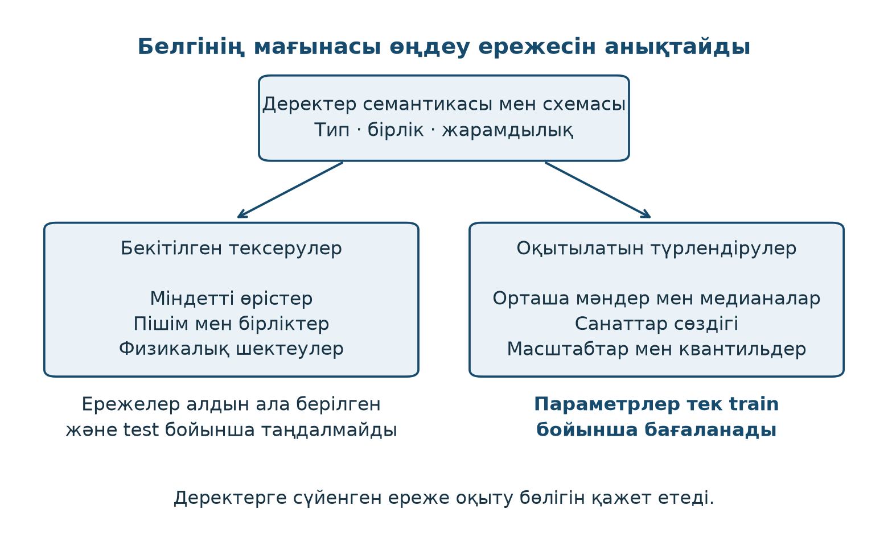
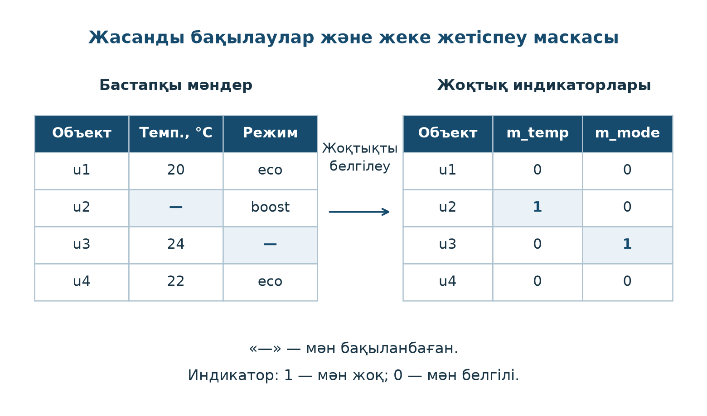
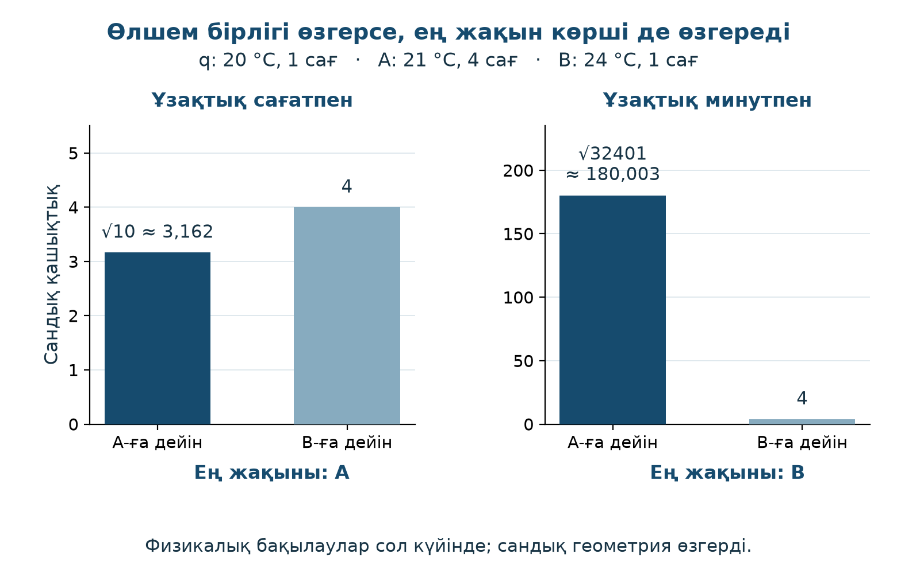
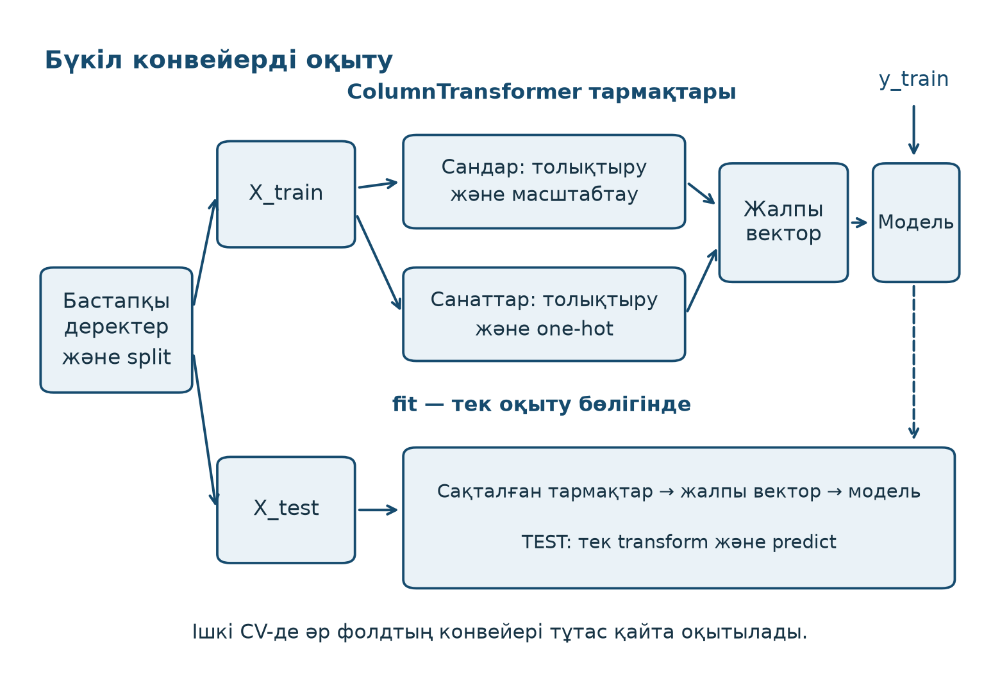
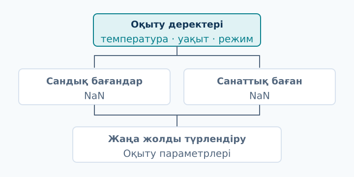
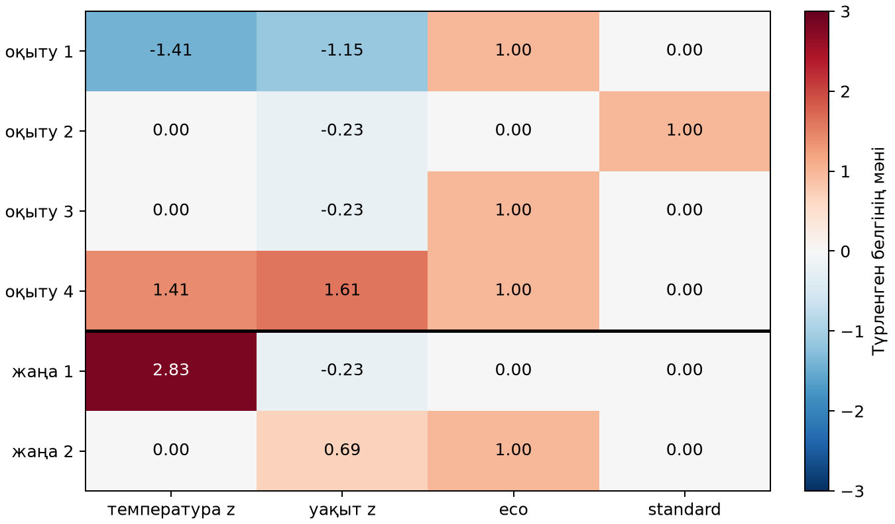
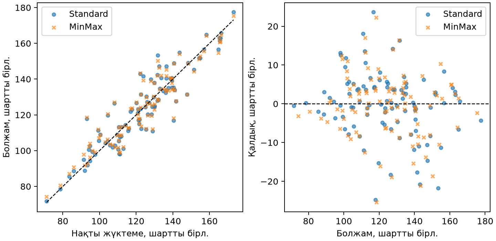

2-тарау. Машиналық оқытуға арналған деректерді дайындау және алдын ала өңдеу.
2.1 Тақырып бағдары
Оқытылатын модель бақыланатын дүниенің әзірлеуші қалыптастырған көрінісін қабылдайды. Егер датчиктің жетіспейтін көрсеткіші физикалық нөлмен алмастырылса, режим атауы еркін таңдалған санға айналдырылса, ал минут пен сағат шатастырылса, алгоритм бастапқыдан өзгерген есепті зерттейді. Сондықтан деректерді дайындау мазмұнға негізделген шешімдерді қажет етеді. Бұл тарауда әр түрлендіру қолданылу шарттары, есептелетін параметрлері және тексеру тәсілі бар нақты анықталған ереже ретінде қарастырылады.
Тараудың мақсаты — аралас кестелік деректерді дайындаудың қайталанатын конвейерін (pipeline) құруды үйрену. Тақырыпты меңгерген студент сақтау типін белгінің мағынасынан ажырата алады, жетіспейтін мәндер мен олардың ықтимал себептерін сипаттайды, толықтырудың жарамды стратегиясын таңдап, оның параметрлерін деректерден бағалайды, санаттарды кодтайды, стандарттау мен нормалауды есептейді, күмәнді бақылауларды зерттейді және түрлендірулер мен модельді Pipeline құрамына біріктіреді. Бұл әрекеттер силлабустың 2.1 индикаторын ашады.
Жұмыс үшін 1-тараудағы объект, белгі, train/test және ақпараттың ағып кетуі (data leakage) ұғымдары қажет. Математикалық алғышарттар — орташа мән, медиана, квадрат түбір және вектордың евклидтік ұзындығы. Бағдарламалау алғышарттары — DataFrame, бағандарды бөліп алу және fit/transform әдістері. Тәжірибеде автордың жергілікті файлдарына немесе сыртқы серверге қол жеткізбей-ақ экспериментті қайталау үшін жабдыққа қатысты анық синтетикалық кесте қолданылады.
Негізгі ұғымдар — деректер схемасы, семантикалық тип (semantic type), жетіспейтін мән, жоқтық индикаторы, импутация (imputation), one-hot, реттік кодтау, белгісіз санат, стандарттау, жолды нормалау, ауытқыма (outlier), телнұсқа, ColumnTransformer және Pipeline. Тақырыпты меңгеру нақты модельге неліктен дәл осындай сандар берілетінін негіздеуге және бастапқы жолдан болжамға дейінгі бүкіл тізбекті қалпына келтіруге мүмкіндік береді.
Оқу жоспары белгілер паспортынан және сапаны диагностикалаудан басталады. Одан кейін мәндердің жетіспеуі, санаттар және масштабтаудың геометриясы қарастырылады. Бұдан соң өлшеу қатесі мен сирек кездесетін жарамды оқиғаның айырмасын талдап, ережелерді конвейерге біріктіреміз және бақыланатын эксперимент жүргіземіз. Бағдарламалық мысалдарды оқымас бұрын шағын кестені қолмен түрлендіріңіз. Кейін нәтижеңізді бағдарламаның шығысымен, әсіресе train ішінде болмаған жаңа мән үшін, салыстырыңыз.
2.2 Белгі типі және бақылаулар сапасы
Сақтау типі бағдарламаның қандай амалдарға рұқсат беретінін көрсетеді. Семантикалық тип есепте қандай амалдардың мағынасы бар екенін көрсетеді. Бүтін сандар бағанында қосылу саны, құрылғы коды немесе аудан нөмірі болуы мүмкін. Қосылу санының орташа мәні түсінікті мағынаға ие. Аудан кодтарының орташа мәнінде әдетте мұндай мағына болмайды. Сандық бағандарды автоматты таңдау ыңғайлы, бірақ ол зерттеушіні олардың мазмұнын тексеруден босатпайды.
Сандық өлшем үшін өлшем бірлігі мен рұқсат етілген облыс көрсетілуі тиіс. Температураның 25 көрсеткіші сан ретінде дұрыс көрінеді, бірақ шкаласы мен өлшеу жағдайлары белгісіз болса, оның мағынасы бірмәнді емес. Шығынның нөлдік мәні тоқтауды, өлшеудің болмауын немесе беру қатесін білдіруі мүмкін. Бұл жағдайлар әртүрлі әрекеттерді талап етеді. Оларды бір кодпен біріктірсек, кейінгі модель кіріс деректерінде жойылған айырманы қалпына келтіре алмайды.
Номиналдық санаттар (nominal categories) табиғи реті жоқ әртүрлі күйлерді сипаттайды, мысалы, жабдық типі, қала немесе режим атауы. Реттік санаттардың (ordinal categories) келісілген реті бар, мысалы, жүктеменің төмен, орташа және жоғары деңгейлері. Рет болғанның өзінде іргелес деңгейлер арасындағы қашықтықтар міндетті түрде тең емес. 0, 1, 2 деп кодтау бірдей сандық қадамдарды енгізеді. Оның жарамдылығы алгоритмге және осы сандардың қалай түсіндірілетініне байланысты.
Күн мен уақыт бірнеше әртүрлі қасиетті біріктіреді. Күнтізбелік айды, тәулік уақытын, оқиғадан кейінгі ұзақтықты немесе абсолют уақыт мезетін пайдалануға болады. Екі уақыт белгісінің айырмасын есептеу үшін ортақ уақыт белдеуі мен түсінікті дөңгелектеу ережелері қажет. Циклдік уақытта 23:59 бен 00:01 аралығының жақындығы сағат кодтарының кәдімгі айырмасымен нашар беріледі. Уақыт белгілерін құрастыру 11-тарауда егжей-тегжейлі қарастырылады. Мұнда datetime типінің неліктен мазмұндық тұрғыдан дайын көрініс бола бермейтінін түсіну жеткілікті.
2.1-кесте. Жабдықтың оқу кестесіне арналған белгілер паспорты
| Белгі | Мағынасы мен типі | Оқытуға дейінгі тексеру |
|---|---|---|
| temperature_C | °C-пен берілген температура, сандық өлшем | Шкала, рұқсат етілген диапазон және мәннің жоқтығын белгілеу |
| hours | Аралықтағы жұмыс ұзақтығы, сандық белгі | Уақыт бірлігі, аралық шекаралары, болуы мүмкін емес мәндер |
| mode | Жұмыс режимі, номиналдық санат | Жазылу нұсқаларының сөздігі, жетіспейтін мәндер және бұрын кездеспеген режимдер |
| shift | Ауысым, санаттық белгі | Бірыңғай код, күнтізбемен сәйкестік |
| load_synthetic | Берілген синтетикалық жүктеме, y мақсатты айнымалысы | X-тен бөлек сақтау және генераторды нақты сипаттау |
Тексеруді жолдар мен бағандар санынан, өріс атауларынан, типтерден, жетіспейтін мәндер үлестерінен және қарапайым үлестірімдерден бастайды. Бірақ df.info() нәтижесін басып шығару сапа туралы қорытынды болып саналмайды. «1 250» жолдық мәні мыңдық бөлгіші бар санды, ал «1,250» ондық бөлшекті немесе басқа жазылу пішімін білдіруі мүмкін. Таңбаларды өшірмес бұрын дереккөздегі ережені анықтау қажет. Қате мәнді NaN-ға хабарламай айналдыруға осындай түрлендіру туралы мәлімет сақталған жағдайда ғана жол беріледі.
Санаттардың мәндерін де біріздендіру қажет. «eco», «Eco» және «eco » бір режимді білдіруі мүмкін. Сонымен бірге ұқсас жолдар әртүрлі ресми кодтар болуы ықтимал. Біріктіру үшін сәйкестік сөздігі немесе құжатталған ереже керек. Регистрді механикалық өзгерту режим атауының мағынасын әдетте сақтайды, бірақ идентификатор не техникалық код үшін бұл міндетті емес. Бастапқы жазбаны тазартылған өрістен бөлек сақтау пайдалы.
Телнұсқаларды (duplicates) бақылау бірлігі деңгейінде тексереді. Екі бірдей жол бір оқиғаның қайталап жүктелуі де, мәндері бірдей тәуелсіз өлшеулер де болуы мүмкін. drop_duplicates() командасы таңдалған өрістер бойынша сәйкестіктерді өшіреді, бірақ олардың шығу тегін анықтамайды. Оқиғалар үшін дереккөз идентификаторы мен уақыт белгісін қолдану сенімдірек. Бір агрегаттың қайталама өлшеулерінде кейін деректерді бөлу үшін топ идентификаторын да сақтау маңызды.
Сыртқы тұтастық бақылауын статистикалық оқытуға дейін орындауға болады, мысалы, міндетті өрістерді, өлшем бірліктерін, болуы мүмкін емес күнді және бекітілген сөздікке сәйкестікті тексеру. Мұндай ережелер модельді баптау үшін тексеру бөлігінің жауаптарын пайдаланбайды. Ал квантильдер бойынша шектеу шекаралары, толықтырудың орташа мәндері немесе ең пайдалы белгілерді таңдау бақыланатын іріктемеге тәуелді. Бұл параметрлер оқыту бөлігінің ішінде бағалануы тиіс. Кез келген тазалау амалын тек онда y-ке айқын жүгіну жоқ деген себеппен split-ке дейін қолдануға жарамды деп атауға болмайды.

Дереккөз: автордың 2-дәрісінің тақырыбы бойынша түпнұсқа схема, 6–8-б.; осы қолжазба үшін жасалған.
2.1-суретте мазмұнның алдын ала бекітілген тексерулері мен параметрлері train бойынша бағаланатын түрлендірулер бөлек көрсетілген. Бұл айырма кейінгі барлық бөлімдерде қажет болады. Шешім қабылдау үшін үлестірімді зерттеу керек болса, алдымен мұндай зерттеуге деректердің қай бөлігінде рұқсат берілетінін және оның қандай шешімдерді өзгерте алатынын анықтаңыз.
Дайындаудың сапалы журналында бастапқы күй, анықталған мәселе, қабылданған ереже, шешімнің негізі және өзгеріске ұшыраған бақылаулар саны жазылады. Мысалы, «12 жолда температура ондық үтірмен жазылған; пішімді датчик сипаттамасы растайды; үтір нүктеге ауыстырылып, бастапқы жол сақталды». Мұндай жазба келесі жүктеменің өңделуін тексеруге көмектеседі. «Деректер тазартылды» деген сөйлемнен ережені де, оның салдарын да қалпына келтіру мүмкін емес.
2.3 Жетіспейтін мәндер және бақылау механизмі
Мәннің жетіспеуі деректер схемасында көзделген мәннің бақыланбағанын білдіреді. Бұл нақты санның емес, ақпарат алу үдерісінің сипаттамасы. Датчик температураны жібермесе, нөлді жазу температура өлшенді және нөлге тең деген қате тұжырым жасар еді. Алдымен объектінің күйі мен өлшеудің күйін ажырату қажет. Бос жол, сұрақ белгісі, NaN және арнайы код бір жоқтық күйін белгілеуі мүмкін, алайда бастапқы жүйеде мағыналары әртүрлі болуы да ықтимал. Бұл келісімдер құжаттама арқылы нақтыланып, бірізді көрініске келтіріледі.
Кез келген бос өрісті қалпына келтіру міндетті емес. Ақаусыз агрегатта жөндеу күнінің көрсетілмеуі жоғалған өлшеуді емес, «жөндеу орындалмады» дегенді білдіруі мүмкін. Объектіге қолданылмайтын өрісті міндетті түрде толтырылуы тиіс өрістен ажырату керек. Кейде жоқтық себебін жеке санат ретінде сақтау пайдалы. Белгісіз y жауабын ең жиі класқа автоматты ауыстырсақ, ойдан шығарылған оқыту белгілері пайда болады. Бұл тарауда толықтыру кіріс белгілері үшін қарастырылады. Мақсатты жауаптың болмауы таңбалау мен оқыту іріктемесінің құрамы туралы жеке шешімді талап етеді.
Механизмді талқылау үшін Z ықтимал толық деректерін, яғни толық бақылауда қолжетімді болуы мүмкін мәндерді енгізейік. R матрицасы олардың қайсысы іс жүзінде бақыланғанын тіркейді. Оның өлшемі тиісті кестенің өлшемімен бірдей:
Жетіспеу механизмі R үлестірімінің Z-ке тәуелділігін сипаттайды. Толығымен кездейсоқ жетіспеу (missing completely at random, MCAR) кезінде бақылау ықтималдығы деректердің ықтимал мәндеріне тәуелді емес. Мұндай механизмнің оқу моделі — жабдықтың күйіне, жұмыс уақытына және өзге өлшеулерге тәуелсіз жекелеген хабарлардың кездейсоқ жоғалуы. Мұндағы «кездейсоқ» сөзі күнделікті түсініктегі болжап болмайтындықтан күштірек талап қояды. Айқын түсіндірменің болмауы тәуелсіздікті дәлелдемейді.
Шартты кездейсоқ жетіспеу (missing at random, MAR) кезінде тәуелділік бақыланған бөлік арқылы болуы мүмкін. Берілген r үлгісі үшін оны z_obs(r), ал белгісіз бөлікті z_mis(r) деп белгілейік. Қарастырылатын үлгілер мен жарамды мәндер үшін келесі шартты қолданамыз:
MAR мағынасы — бақыланған мәндер ескерілгеннен кейін белгісіз мәндерге қосымша тәуелділіктің болмауы. Мысалы, діріл датчигін белгілі бір тіркелген жұмыс режимінде жиірек өшіреді. Режим бірдей болғанда өшіру ықтималдығы белгісіз дірілдің өзіне және басқа бақыланбаған шамаларға тәуелді болмаса, механизмнің мұндай моделі MAR шартына сай болуы мүмкін. Бұл «режим» бағанының бар болуынан туатын қорытынды емес, үдеріс туралы жорамал.
Кездейсоқ емес жетіспеу (missing not at random, MNAR) кезінде белгісіз мәнге тәуелділік сақталады. Датчик өлшеу диапазонынан асқан сәтте сигнал беруді тоқтатуы мүмкін. Онда көрсеткіштің болмауы үлкен, бірақ жасырын шамамен байланысты. Осындай мәндерді қалыпты режимдер бойынша орташа мәнмен толықтыру ең қызықты оқиғаларды жасыруы мүмкін. Толықтыру алгоритмін ауыстыру датчиктің артық жүктелуі туралы ақпарат тапшылығын жоймайды. Оның күй журналы, қосымша өлшеу немесе үдеріс физикасынан белгілі шектеулер қажет болуы мүмкін.
Бұл үш атауды автоматты диагнозға айналдырмау маңызды. Жалғыз толық емес бақыланатын кесте бойынша жалпы жағдайда MAR мен MNAR-ды бірмәнді ажырату мүмкін емес. Белгісіз мәндер мен жетіспеу механизмінің әртүрлі модельдері бірдей бақылауларға сәйкес келуі мүмкін. Жетіспеу индикаторының белгілі режиммен байланысы MCAR-ға күмән келтіруі мүмкін, бірақ MAR-ды дәлелдемейді. Өлшеу рәсімі туралы мәлімет, қосымша дерек жинау және балама түсіндірмелерге сезімталдықты талдау жорамалдың негізділігін арттырады. MAR анықтамаларының ерекшеліктері мен статистикалық қорытынды шарттары [1–2] зерттеулерінде талданған.
Статистикалық теориядағы «ескермеуге болатын механизм» атауы деректердің толық болмауына қатысты барлық мәселені елемеуге рұқсат бермейді. Нақты қорытындыға жетіспеудің жеке моделін қоспау мүмкіндігі қабылданған модельге, қорытынды түріне және қосымша шарттарға тәуелді. MAR тұжырымынан орташа мәнмен кез келген толықтыру ығыспаған бағалар береді немесе белгілер арасындағы байланыстарды сақтайды деген қорытынды шықпайды. Кіріспе тәжірибе үшін сақтық ережесі жеткілікті — дерек жинау туралы жорамалды түсіндіріп, нәтижені өңдеудің орынды нұсқаларына қатысты сезімталдығын тексеру. Мұны барлық бақыланбаған тәуелділікті тексеру деп көрсетуге болмайды.
Диагностика белгілердің бірге жетіспеуін ескеруі тиіс. Температура мен қысым бір мезгілдерде жоғалса, себеп датчиктердің екі тәуелсіз ақауы емес, ортақ байланыс арнасының өшуі болуы мүмкін. Жетіспейтін мәндер аспап ауыстырылғаннан кейін ғана пайда болса, кезең мен жабдық нұсқасы маңызды. Топтар мен уақыт бойынша жетіспеу үлестерін салыстыру дерек иесіне қойылатын сұрақтарды тұжырымдауға көмектеседі. Мұндай салыстыру белгісіз мәндерді ашпайды, бірақ сандық кестені нақты бақылау рәсімімен байланыстырып, кейінгі толықтыру шешіміне мазмұндық негіз береді.
Болжам жасау мен ғылыми параметрді бағалау үшін жетіспейтін мәндердің салдары әртүрлі болуы мүмкін. Ыңғайлы көрініс өлшемнің шын үлестірімін қалпына келтірмей-ақ болжамды жақсарта алады. Керісінше, шындыққа ұқсас толықтырудың мақсатты есепке пайдалы болатынына кепілдік жоқ. Сондықтан есепте екі мақсат ажыратылады — модель үшін белгілерді дайындау және бақыланбаған үдерістің өзі туралы қорытынды жасау. Медиананы қарапайым алмастыру бірінші есептің инженерлік шешімі болып табылады, алайда екінші есептің шешілгенін дәлелдемейді.
Жолдарды өшіру де есепті өзгертеді. MCAR жағдайында толық бақылаулар қажетті репрезентативтілікті сақтауы мүмкін, бірақ олардың саны азаяды. Жетіспеу жабдық күйіне тәуелді болса, толық жолдар іріктемесі күрделі режимдерді қамтымай қалуы мүмкін. Жүйе пайдалану кезінде осындай режимдермен жұмыс істеуі тиіс болса, тек толық жолдарда тексеру басқа сұраққа жауап береді. Белгіні өшіру, объектіні өшіру және жоқтық индикаторын жасау бір ғана жетіспеу пайызы бойынша таңдалмай, мазмұндық негізделуі керек.
2.4 Жетіспейтін мәндерді ақпарат ағып кетпейтіндей толықтыру
Толықтыру, немесе импутация, қолжетімді ақпарат арқылы белгісіз мәннің алмастырғышын құрады. Ең қарапайым стратегиялар бір бағанның статистикасын — орташа мәнді, медиананы, ең жиі мәнді немесе алдын ала таңдалған тұрақтыны пайдаланады. Олар түсінікті, есептеуді аз қажет етеді және салыстыруға пайдалы базалық деңгей береді. scikit-learn ішінде бұл тәсілдер SimpleImputer арқылы ұсынылған [3]. Қарапайым болуы хаттаманы тексеруді жеңілдетеді. Әр түрлендіру параметрін бағалауға қандай бақылаулар қатысқанын көрсетуге болады.
T — оқыту бөлігінің жолдар жиыны, ал O_j — j белгісінің мәні бақыланған T жолдары болсын. Онда екі сандық алмастырғыш бірдей рұқсат етілген жиын арқылы анықталады:
Орташа мән бақыланған мәндердің бір тұрақтыдан ауытқу квадраттарының қосындысын, ал медиана абсолют ауытқулар қосындысын азайтады. Бұл олардың шеткі мәндерге сезімталдығының айырмасын түсіндіреді, бірақ белгісіз өлшемнің табылған тұрақтыға тең екенін дәлелдемейді. Санаттық белгі үшін моданы, яғни бақыланған оқыту мәндері ішіндегі жиілігі ең жоғары санатты пайдаланады. Жиіліктер тең болғанда нақты таңдау ережесі қажет. Ол іске асыру нұсқасымен бірге тіркеледі.
Алмастыру үлестірімді өзгертеді. Көптеген белгісіз мәнді бір тұрақтымен алмастырсақ, сол нүктеде бақылаулардың жасанды шоғырлануы пайда болады. Белгінің өзгергіштігі мен басқа бағандармен байланысы өзгереді. Сондықтан деректерді сипаттағанда толықтырылған мәндерді іс жүзінде өлшенген мәндер ретінде көрсетуге болмайды. Жоқтық маскасы мен бастапқы кестені сақтау пайдалы. Бұл өлшемді есептелген алмастырғыштан ажыратуға және қабылданған шешімді қайта қарауға мүмкіндік береді.
Бір технологиялық үдерістің қысым және шығын деген екі өлшемін қарастырайық. Қысым өскенде шығын әдетте артатын болса, барлық жетіспейтін шығынды ортақ медианамен толықтыру төмен және жоғары қысымдардың жанына бірдей сандарды қояды. Бастапқы тәуелділік ішінара әлсірейді. Режимдер бойынша бөлек толықтыру құрылымның көбірек бөлігін ескеруі мүмкін, бірақ режим уақытында белгілі болып, оның ішінде бақылаулар жеткілікті болуы тиіс. Бұл мысал стратегияны тек толықтырылған гистограмманың сырттай тегістігіне қарап таңдауға болмайтынын түсіндіреді. Болжам үшін қажет ақпараттың құрылымы маңызды.
Жетіспеу индикаторы мәннің белгісіз болғаны туралы ақпаратты сақтайды. Оны m_ij = 1 − R_ij деп белгілейік. Бекітілген c_j алмастырғышы кезінде белгілер жұбын аламыз:
Бақыланған мәнді x_ij күйінде қалдырып, белгісіз мәнді сақталған c_j тұрақтысымен алмастырады. Осылайша әр объект үшін толықтырылған шама мен m_ij екілік индикаторы беріледі.
Толықтырылғаннан кейінгі сан модельге шартты шаманы, ал индикатор осы санның шығу тегін хабарлайды. Мұндай жұп іс жүзінде өлшенген мәні медианаға тең объектіні медиана қойылған объектіден ажыратуға мүмкіндік береді. Алайда индикатордың пайдалылығын тексеру қажет. Өлшеу тәжірибесі өзгерсе, жетіспеудің жауаппен байланысы әлсіреуі мүмкін. Болжам мезетінен кейінгі оқиғалар бойынша құрылған индикатордың өзі ақпараттың ағып кету көзіне айналады.
2.2-кесте. Жетіспейтін мәндермен жұмыс істеудің қарапайым тәсілдері
| Тәсіл | Нені сақтайды немесе алмастырады | Маңызды шектеуі |
|---|---|---|
| Жолдарды өшіру | Тек толық бақылауларды | Объектілер құрамын өзгертіп, дерек көлемін азайтады |
| Орташа мән | Train бойынша сандық алмастырғышты | Шеткі мәндерге сезімтал, өзгергіштікті азайтады |
| Медиана | Train бойынша орталық сандық мәнді | Белгілер арасындағы тәуелділіктерді қалпына келтірмейді |
| Мода немесе жеке санат | Санаттық алмастырғышты | Мода жетіспеуді нақты санатпен араластырады |
| Толықтырумен бірге индикатор | Жоқтық фактісін және сандық кірісті | Бақылау үдерісінің тұрақтылығына тәуелді |
2.1-есептік мысал. Толықтыру статистикасы және жасырын ақпарат ағуы
Шартты бірліктермен берілген x_train = [2, 4, 6, жетіспейтін мән, 40] жасанды белгісін қарастырайық. Төрт сан бақыланған. Орташа мәні (2 + 4 + 6 + 40)/4 = 13, ал әдеттегі сандық медианасы (4 + 6)/2 = 5. Орташа мәнмен толықтырғанда [2, 4, 6, 13, 40], медианамен толықтырғанда [2, 4, 6, 5, 40] шығады. Индикатор бірдей — [0, 0, 0, 1, 0]. 40 деген үлкен бақылау орташа мәнді едәуір ығыстырды, бірақ арифметика оны өлшеу қатесі деп жариялауға немесе есепті ескермей медиананы таңдауға мүмкіндік бермейді.
Енді бөлінген тексеру бөлігінде x_test = [60, 88, жетіспейтін мән] бар болсын. Қателесіп екі бөліктің барлық белгілі мәндері бойынша орташа мәнді бағаласақ, (2 + 4 + 6 + 40 + 60 + 88)/6 = 100/3 ≈ 33,333 аламыз. Бұл сан тіпті train ішіндегі белгісіз мәндерге де қойылады. Оқыту бөлігі бойынша таңдалған дұрыс алмастырғыш 13 күйінде қалады және екі бөлікке де қолданылады. 13 пен 33,333 арасындағы айырма рәсімнің test үлестіріміне қарағанынан ғана пайда болды.
Мұндай ақпарат ағуы әр тәжірибеде әр метриканы міндетті түрде арттырады деп тұжырымдауға болмайды. Бұл мысалда жауаптар мүлде берілмеген, сондықтан сапа өзгерісінің шамасын есептеу мүмкін емес. Бұзушылық әсердің алдын ала кепілденген бағытына емес, тыйым салынған ақпаратқа қол жеткізуге қатысты. Test болашақ кезеңді білдірсе, ортақ статистика режимнің өзгеруін де жасырады. Пайдалану кезінде болашақтағы 60 және 88 мәндері әлі белгісіз болады, ал кейіннен оқытылған рәсімді уақыт бойынша қайталау мүмкін болмайды.
Хаттаманы әрекеттер ретінен бастап түзетеді. Алдымен дерек бөліктері бекітіліп, содан кейін ғана статистикалар train бойынша бағаланады. Орташа мән мен медиана арасындағы таңдау жолдар құрамын бірдей сақтай отырып validation бойынша жүргізіледі. Test үшін таңдалған тәсіл мен сақталған параметрлер қолданылады. Баптау айқас тексерумен (cross-validation) жүргізілсе, импутация әр фолдтың оқыту бөлігінде қайта оқытылады. Фолдтарды құрмай тұрып бүкіл development бөлігін толықтыру да осы бөлуді бұзады. Түрлендірулерді тек рұқсат етілген бөлікте оқыту қағидасы ресми ұсынымдарға сәйкес келеді [7].
Топтар бойынша толықтыруға ерекше назар қажет. Жеке агрегаттың орташа температурасы ортақ орташа мәннен пайдалырақ болуы мүмкін, бірақ топ статистикасы қолжетімді тарихқа сүйенуі тиіс. Айдың басындағы болжам үшін агрегаттың сол айдағы барлық өлшемін пайдалануға болмайды. Тарихы жоқ жаңа агрегат үшін әрекетті де алдын ала анықтау қажет, мысалы, ортақ оқыту статистикасына көшу. Топтарға тым ұсақ бөлу бағалауға аз бақылау қалдырып, алмастырғышты тұрақсыз етеді.
Жарамсыз алмастырудың тағы бір түрі жаңа объектінің шын класын пайдаланады. Оқыту объектілерінің белгісіз белгілерін әр класс үшін бөлек орташа мәндермен толықтырсақ, қолдану кезінде болжам алынбай тұрып класты білу қажет болады. Тиісті орташа мәнді таңдау үшін тест жауаптарын беру тікелей ақпарат ағуын туғызады. Тіпті арнайы оқыту моделі көріністі дайындағанда жауаптарды пайдаланса да, оны қолдану рәсімі белгісіз жауапсыз жұмыс істеуі тиіс. Осы тараудың қарапайым конвейері үшін алмастырғышты кіріс оқыту деректерімен бағалап, жаңа объектіні түрлендіруге қажет ақпаратты нақты атаған қауіпсізірек.
Стратегияны таңдау да шешімді оқытудың бөлігі. Бірнеше толықтыру тәсілі қорытынды тест бойынша кезекпен салыстырылып, ең жақсысы қалдырылса, барлық орташа мән train бойынша есептелгеннің өзінде тест баптауға пайдаланылған болады. Сондықтан екі түрлі шектеу тексеріледі — нақты түрлендірудің параметрлері қайдан алынғаны және түрлендірудің өзі қандай дерек бойынша таңдалғаны. Модельді, кодтау тәсілін және жетіспейтін мәндерді өңдеуді бірге баптағанда екі шектеу де сақталады.
Train ішінде баған түгел бос болса, орташа мән мен медиананы бағалау мүмкін емес. Мазмұндық тұрғыдан жарамды тұрақтыны таңдау, бағанды алып тастау немесе деректер алу, содан кейін шығыс белгілерінің санын тексеру керек. Бағдарламалық түрлендіргіштің түгел бос бағандармен әрекеті оның баптауларына тәуелді. Индикаторлардың болуын да айқын тексеру қажет. Индикаторлар қосылған SimpleImputer оқыту кезінде жетіспейтін мәндері болған белгілерге бағдарланады; жеке MissingIndicator олардың құрамын басқаруға мүмкіндік береді [3–4]. Пайдалану кезінде жаңа жетіспейтін мәндер пайда болуы үшін алдын ала көзделген саясат керек.
Күрделірек импутация бағандар арасындағы байланыстарды немесе объектілердің ұқсастығын пайдаланады. Ол қосымша ақпаратты ескере алады, бірақ қосымша жорамалдар мен есептеу шығындарын енгізеді. Тіпті күрделі модельмен бір рет толықтыру белгісіз мәндердің бүкіл белгісіздігін сипаттамайды. Статистикалық қорытындылар үшін оны ескеретін арнайы әдістер қажет болуы мүмкін. Қазіргі болжамдық есепте түсінікті рәсімнен бастап, оны баламасымен рұқсат етілген тексеру бөлігінде салыстыру және деректерді толық қалпына келтіруді уәде етпей, шектеулерін сипаттау орынды.

Дереккөз: автордың 2-дәрісінің тақырыбы бойынша түпнұсқа микрокесте және схема; барлық мән оқу үшін берілген.
2.5 Санаттық белгілер және белгісіз санаттар
Санаттық белгі күйге немесе топқа тиістілікті анықтайды. «Алматы», «Астана» және «Шымкент» мәндері қалаларды білдіреді. Атаудың жазылуы олардың арасындағы сандық қашықтықты анықтамайды. Мысалы, «төмен», «орташа», «жоғары» реттік санатында мазмұндық рет бар. Алайда рет аралықтардың шамасын өздігінен анықтамайды. Іргелес деңгейлер айырмасы тәуекелдің бірдей өзгерісін немесе физикалық көрсеткіштердің бірдей айырмасын білдіруге міндетті емес.
Қалаларға 0, 1 және 2 кодтарын еркін тағайындау сақтау үшін ыңғайлы, бірақ алгоритмге шындықта жоқ геометрияны таңуы мүмкін. Сызықтық модель кодтың бір бірлікке өзгеруі үшін бір коэффициент алады, ал ең жақын көршілер әдісі кодтар арасындағы қашықтықты есептей бастайды. Кәдімгі сандық шектері бар ағаш та осы кодтар ретімен шектелген. Алдымен оған тізбектес топтарға бөлу қолжетімді болады. Сондықтан тіпті ағаш үшін де еркін код санаттық белгінің толық бейтарап алмастырғышы емес.
Номиналдық санаттарға көбіне one-hot encoding қолданылады. Оқыту деректері бойынша бекітілген сөздікте c₁, …, c_K түріндегі K санат бар болсын. Әрқайсысы жеке координатамен беріледі:
Толық сөздікте бір координата бірге, қалғандары нөлге тең. Бұл жасанды ретті жояды, бірақ көріністі қалалардың нақты ұқсастығы туралы білімге айналдырмайды. Санат саны артқан сайын бағандар саны көбейеді. Сирек матрицаларда (sparse matrices) негізінен нөлден өзге элементтер сақталады. Есептеу тұрғысынан жарамдылық өлшемділікке ғана емес, кейінгі модельдің таңдалған дерек пішімін қолдауына да тәуелді.
2.2-есептік мысал. Кодтау және бірмәнді емес нөлдік вектор
Қолмен берілген [Алматы, Астана, Шымкент] реті үшін e(Алматы) = (1, 0, 0), e(Астана) = (0, 1, 0), e(Шымкент) = (0, 0, 1) аламыз. Кез келген екі түрлі белгілі санат арасындағы евклидтік қашықтық квадраты 1² + (−1)² = 2, ал қашықтық √2 болады. Бұл — кодтаудың қасиеті. Ол географиялық қашықтықтардың немесе осы қалалардың әлеуметтік-экономикалық ұқсастығының тең екенін білдірмейді.
Оқыту кезінде кездеспеген жаңа қала келді делік. Белгісіз санат еленбейтін баптауда OneHotEncoder тиісті блок үшін нөлдер қалыптастырады [5]. Толық үшөлшемді көріністе (0, 0, 0) белгілі үш кодтың бәрінен өзгеше, бірақ кез келген белгісіз қала үшін бірдей. Енді Алматыны тірек санат етіп таңдап, бірінші координатаны алып тастайық. Алматы = (0, 0), Астана = (1, 0), Шымкент = (0, 1) кодтары шығады. Белгісіз қала қайтадан (0, 0) болып, Алматымен сәйкес келеді. Осы екі координата арқылы айырманы қалпына келтіру мүмкін емес.
Бір координатаны алып тастау кейде регуляризациясыз сызықтық модельдегі бос мүшемен бірге пайда болатын сызықтық тәуелділікті жою үшін қолданылады. Бұл — кез келген алгоритмге автоматты түрде көшірілмейтін жеке шешім. One-hot бағандарының толық жиынының қосындысы бірге тең, сондықтан коэффициенттерді бағалау ерекшеліктерін ескеру қажет. Сонымен қатар тірек және белгісіз санаттарды араластыруға жол берілетінін шешу керек. Бағдарламаның формалды қатесіз орындалуы жаңа күйдің дұрыс өңделгенін білдірмейді.
Белгісіз санаттар саясаты сұрауды айқын қабылдамауды, сирек мәндердің ортақ тобын немесе алдын ала сипатталған арнайы санатты көздеуі мүмкін. Арнайы белгі сөздікке қосылып, бірақ оқыту объектілерінің ешқайсысында болмаса, модель оның жеке әсерін бағалайтын мысалдар алмаған болады. Сирек санаттарды топтау train бойынша таңдалған ережені және ақпарат жоғалуын тексеруді қажет етеді. Ондай топ болмаған кезде кейбір бағдарламалық баптаулар нөлдік көрініске қайта оралады [5]. Бұл әрекетті модельді қолданбай тұрып білу қажет.
Бірегей санаттардың жоғары үлесі жеке назарды талап етеді. Жабдық идентификаторы, шарт нөмірі немесе жазбаның кездейсоқ коды әр объект үшін дерлік жеке баған беруі мүмкін. Модель жекелеген бақылауларды жаттап алу мүмкіндігін алады, бірақ жаңа идентификатор үшін дерлік ақпарат алмайды. Кейде идентификаторды модельге кәдімгі белгі ретінде берудің орнына топтық бөлуге және телнұсқаларды тексеруге қолданған пайдалы. Шешім сценарийге тәуелді. Бұрыннан белгілі агрегаттарға болжам жасау мен жаңа агрегаттарға көшіру — әртүрлі есептер.
Санаттар жазылуын біріздендіру мағынаны сақтауы тиіс. Артық бос орындарды өшіру мен регистрді келісу бір атаудың техникалық тұрғыдан әртүрлі жазбаларын біріктіре алады. Алайда қысқартулардың сәйкестігі объектілердің бірдей екенін әлі білдірмейді. Рұқсат етілген мәндер анықтамалығы мен біріктіру ережелері дерек дайындаудың бөлігі ретінде тіркеледі. Бейтаныс санатты ең ұқсас таныс санатқа автоматты түзету қауіпті. Айырма жабдықтың шын мәнінде жаңа типін немесе жаңа ұйымдық бірлікті көрсетуі мүмкін және ол үшін модельді бөлек тексеру қажет.
Жетіспейтін санат пен жаңа санаттың шығу тегі әртүрлі. Бірінші жағдайда мән бақыланбаған; екінші жағдайда ол белгілі, бірақ оқыту сөздігінде жоқ. Моданы қою жетіспеуді ең жиі белгілі санатпен араластырады. Жоқтықтың арнайы санаты оны өңдеу алдын ала көзделсе, бұл айырманы сақтайды. Кодтауға дейін бос мәннің белгілерін біріздендіру керек. Әйтпесе None, бос жол және «белгісіз» мәтіні кездейсоқ бірнеше келісілмеген күйге айналуы мүмкін.
Шын мәнінде реттік белгілер үшін OrdinalEncoder санаттар тізбегін айқын беруге мүмкіндік береді [6]. Кодтар ретті сақтайды, алайда кәдімгі сандық модель іргелес кодтар арасындағы ауысудың әсерін қосымша бірдей деп жорамалдауы мүмкін. Бұл жорамал мазмұндық және эксперименттік тұрғыдан тексеріледі. Қажет болса басқа көрініс қолданылады. Белгісіз мәннің сандық таңбасын да ойланбастан шкаланың жаңа деңгейі деп санауға болмайды. −1 коды жасанды түрде «төменнен де төмен» орналасуы мүмкін, ал шын мәнінде таныс санаттың жоқтығын білдіреді.
Сөздік, жазылуды біріздендіру ережелері және шығыс бағандарының атаулары модельмен бірге сақталады. Train мен test-ті тәуелсіз кодтау әртүрлі бағандар немесе координаталардың әртүрлі ретін қалыптастыруы мүмкін. Онда массивтегі бірдей орынның мағынасы әртүрлі болады. Дұрыс рәсім сөздікті train бойынша үйреніп, қалған бөліктерге сол түрлендіргішті қолданады. Дайындаудың келесі кезеңіне дейін бірнеше белгілі, жетіспейтін және белгісіз мәнді қолмен тексерген пайдалы. Алынған векторлар белгілердің құжатталған мағынасына сәйкес келуі тиіс.
2.3–2.5-бөлімдерге арналған бастапқы дереккөздер
- Rubin D. B. Inference and missing data. Biometrika. 1976. Vol. 63, no. 3. P. 581–592. DOI: 10.1093/biomet/63.3.581.
- Seaman S., Galati J., Jackson D., Carlin J. What Is Meant by Missing at Random? Statistical Science. 2013. Vol. 28, no. 2. P. 257–268. Зерттеудің авторлық нұсқасы.
- Scikit-learn. SimpleImputer.
- Scikit-learn. MissingIndicator.
- Scikit-learn. OneHotEncoder.
- Scikit-learn. OrdinalEncoder.
- Scikit-learn. Common pitfalls and recommended practices.
Құжаттама 04.11.2026 күні тексерілген; ашылған беттер scikit-learn 1.9.1 нұсқасына қатысты. Авторлық оқу негізі — 2-дәріс, 9–12, 15–16, 20–24-беттер; 2-зертханалық жұмыс, 1–5-беттер. Тиісті комплектің бағдарламалық мысалдары бекітілген орындау ортасында бөлек тексеріледі.
2.6 Масштабтау және белгілер геометриясы
Екі сандық баған бірдей пайдалы факторларды сипаттай отырып, мүлде әртүрлі диапазондарға ие болуы мүмкін. Жұмыс ұзақтығын минутпен көрсеткенде, сол ұзақтықты сағатпен көрсеткеннен табиғи түрде үлкен сандар шығады. Кәдімгі евклидтік қашықтықты пайдаланатын алгоритм бұл айырманың себебін білмейді. Арнайы түрлендірусіз сандық өзгерістері үлкен баған көршілерді немесе кластерлерді іздеудің бүкіл геометриясын дерлік анықтауы мүмкін.
Толығымен жасанды мысалды қарастырайық. Жаңа объектінің температурасы 20 °C, жұмыс ұзақтығы 1 сағат. A объектісінде бұл мәндер 21 °C пен 4 сағатқа, B объектісінде 24 °C пен 1 сағатқа тең. Сандық айырмалар квадраттарын тікелей қоссақ, A-ға дейінгі қашықтық √(1²+3²)=√10≈3,162, ал B-ға дейінгі қашықтық 4 болады. Ең жақыны A болып шығады. Енді сол ұзақтықты минутпен жазайық. A-ға дейінгі қашықтық √(1²+180²)≈180,003 болады, B-ға дейінгі қашықтық 4 күйінде қалады. Физикалық бақылаулар өзгермесе де, ең жақын объект өзгерді.
Бұл арифметикалық қате емес. Қате жорамал — градуспен және сағатпен берілген айырмаларды тікелей қосу мазмұндық тұрғыдан негізді ұқсастық береді деп есептеу. Масштабтау координаталардың салыстырмалы үлесін анықтайды. Оны кейде физикалық мағынасына қарай таңдайды, кейде оқыту үлестірімі бойынша бағалайды. Екі жағдайда да шешім мақсатқа сәйкес болуы тиіс. Стандарттаудан кейінгі бірдей сандық үлес белгілердің себептік маңыздылығы бірдей дегенді білдірмейді.
2.6.1 Оқыту іріктемесі бойынша стандарттау
Әр сандық баған үшін StandardScaler орташа мәнді шегеріп, нәтижені стандартты ауытқумен анықталатын масштабқа бөледі. Төмендегі формулаларда орташа мән мен дисперсия n оқыту мәні бойынша есептеледі, дисперсияның бөлгіші n-ге тең:
Қолмен тексеруде бөлгішті таңдау маңызды. Кейбір статистикалық функциялар әдепкіде n−1 пайдаланады. Оған сәйкес стандартты ауытқу өзгеше болады. StandardScaler нәтижесін қайталау үшін ddof=0 болатын numpy.std баламасы қажет. Бұл бағалардың қайсысы «жалпы дұрысырақ» екені туралы дау емес. Нақты анықталған түрлендіруді қайталап, бір есепте екі келісімді араластырмау қажет.
2, 4 және 6 оқыту мәндерін алайық. Олардың орташа мәні 4. Ауытқулар квадраттарының қосындысы 4+0+4=8, дисперсия 8/3, ал стандартты ауытқу √(8/3)≈1,6330. Түрленген мәндер −1,2247; 0 және 1,2247 болады. Жаңа 8 мәні сол орташа мән мен масштаб арқылы (8−4)/√(8/3)=√6≈2,4495 болып түрленеді. Егер сегіздік тексеру объектісіне жатса, оны қосып орташа мәнді қайта есептеуге болмайды.
Осындай түрлендіруден кейін тұрақты емес оқыту бағанының орташа мәні нөлге, ал қабылданған формула бойынша дисперсиясы есептеу қателері шегінде бірге тең. Бұл — test үшін уәде емес, train қасиеті. Тексеру бағанының орташа мәні нөлден өзгеше болуы мүмкін. Бақылау жағдайларының өзгеруі мен іріктеменің шектеулі көлемі мұндай айырманы табиғи етеді. Әр тексеру партиясын бөлек орталықтандыруға тырысу кіріс көрінісінің ережелерін өзгертіп, деректердің өзгеруін жасыруы мүмкін.
Стандарттау үлестірімді қалыпты үлестірімге айналдырмайды. Ол дисперсия нөлден өзгеше болғанда үлестірім пішінін сақтап, осьтің орнын және масштабын өзгертеді. Асимметриялы баған асимметриялы күйінде, ал шеткі мән негізгі массаға қатысты шеткі күйінде қалады. Тұрақты оқыту белгісі үшін scikit-learn нөлге бөлудің орнына бірлік масштабты қолданады. Мұндай баған түрлендіруді шақырудың арқасында ғана пайдалы өзгергіштікке ие болмайды.
Екі объект арасындағы стандартталған қашықтықты бастапқы координаталардағы салмақталған қашықтық түрінде көрсетуге болады:
Бағанның өлшем бірлігі оң a коэффициентіне көбейтілсе, оқытудағы стандартты ауытқу да сол коэффициентке көбейеді. Олардың қатынасы сақталады. Сондықтан train бойынша дұрыс қайта бағаланған стандарттау осындай қашықтықтың сағат не минут таңдауына тәуелділігін жояды. Сонымен бірге ол бағандардың корреляциясын жоймайды және мазмұны әртүрлі режимдер үшін жақсы метрикаға кепілдік бермейді.
2.6.2 Диапазонға келтіру және жолды нормалау
MinMaxScaler оқыту бағанының минимумы мен максимумын пайдаланады. Нөлден бірге дейінгі диапазон үшін түрлендіру мынадай:
(2.7) формуласы M_j > m_j болғанда қолданылады. Тұрақты оқыту бағаны іске асырудың жеке ережесін немесе оны негіздеп алып тастауды қажет етеді. Нөлдік диапазонға бөлуге болмайды. Train=[2,4,6] үшін 0, 0,5 және 1 мәндері шығады. Тексерудегі 8 мәні (8−2)/(6−2)=1,5 алады. Мұндай жағдайда [0,1] шегінен шығу дұрыс. Жаңа деректер оқыту диапазонынан тыс шықты. Максимумды test бойынша қайта бағаласақ, мән қайтадан аралық ішіне түседі, бірақ тәуелсіз бекітілген түрлендіру жоғалады. Әдіс атауында диапазонның болуы оны әр жаңа партияға қайта оқытуға негіз болмайды.
MinMaxScaler ішінде тексеру мәндерін таңдалған диапазонмен шектеуге мүмкіндік беретін clip параметрі бар. Бұл — ақпарат жоғалтатын жеке шешім. Берілген train кезінде 8 және 100 мәндерінің екеуі де шектеуден кейін 1-ге айналады. Олардың бастапқы айырмасын қалпына келтіру мүмкін емес. Шектеу дрейфті жоймайды және жаңа режимнің жарамдылығын дәлелдемейді. Оны қолдану бағалауға дейін көзделуі тиіс, ал шектелген мәндердің үлесін бақылау пайдалы.
Жолды нормалау басқа есепті шешеді. Нөлдік емес вектор үшін бір объект өз ұзындығына бөлінеді:
(3,4) векторының ұзындығы 5 және ол (0,6;0,8) векторына айналады. (6,8) векторы да сол нәтижеге айналады. Нормалау бағытты сақтап, жалпы шамадағы айырманы жояды. Кейбір мәтіндік көріністер үшін бұл пайдалы, өйткені құжат ұзындығын емес, тақырыптар үлестірімін салыстыру қажет. Абсолют электр жүктемесі үшін шаманы жою есепке қажет сигналдың өзін жоюы мүмкін. Нөлдік вектор үшін алдын ала көзделген әрекет қажет, себебі нөлге бөлуге болмайды.
StandardScaler-ден айырмашылығы, кәдімгі Normalizer басқа объектілердің орташа мәндерін бағаламайды. Әр нөлдік емес жол тәуелсіз түрленеді. Ортақ fit/transform интерфейсі барлық түрлендіргіштердің үйренетін статистикалар жиыны бірдей екенін білдірмейді. Конвейерді жобалағанда тек шақыру атауына бағдарланбай, нақты әдісті түсіну керек.
2.3-кесте. Сандық түрлендірулердің әртүрлі мақсаттары
| Түрлендіру | Ережені не анықтайды | Қандай ақпаратты өзгертеді |
|---|---|---|
| StandardScaler | Train орташа мәні мен стандартты ауытқуы | Әр бағанның орны мен масштабы |
| MinMaxScaler | Train минимумы мен максимумы, таңдалған диапазон | Баған масштабын бақыланған шекараларға қатысты өзгертеді |
| RobustScaler | Train медианасы мен квартильаралық ауқымы | Шеткі мәндерге азырақ сүйенетін орын мен масштаб |
| L2 нормалауы | Әр нөлдік емес объектінің ұзындығы | Бағытты сақтап, вектордың жалпы ұзындығын жояды |

Дереккөз: q=(20,1), A=(21,4), B=(24,1) жасанды нүктелері бойынша түпнұсқа есептеулер.
2.3-суретте бір жұп физикалық белгінің әртүрлі өлшем бірліктеріндегі сандық қашықтықтары салыстырылады. Деректерді дайындау мұнда «ұқсас объект» анықтамасына әсер етеді. Шешім ағашында жеке сандық бағанның монотонды түрленуі әдетте ықтимал бөлулер ретін сақтайды, ал ең жақын көршілер алгоритмінде бүкіл геометрия өзгереді. Сондықтан әр модельді әрдайым масштабтау туралы әмбебап талаптың орнына нақты әдіс талданады. Регуляризациясы бар сызықтық модельдерде масштаб коэффициенттердің салыстырмалы құнына да әсер етеді.
Орташа мәндер мен диапазондарды бағалау және сандық түрлендірулерді қолдану тығыз кесте үшін O(np) ретті амалдарды қажет етеді. Сирек көріністер жадты үнемдей алады, бірақ орташа мәнді шегеру көптеген нөлді нөлден өзге мәндерге айналдыруы мүмкін. Осыдан практикалық ереже туындайды — тығыз кестелік мысалдың үйреншікті баптауын жадты бағаламай алып сирек матрицаға көшіруге болмайды. Түрлендіру құны бүкіл модель құнының бөлігі болып табылады.
2.7 Ауытқымалар, телнұсқалар және белгілер инженериясы
Ауытқыма деп белгілі бір критерий бойынша негізгі массадан қатты ерекшеленетін бақылауды атайды. Бұл термин айырманың себебін анықтамайды. Ондық бөлгіш қатесі, шынайы апаттық жүктеме және жаңа жұмыс режимі диаграммада бірдей әдеттен тыс көрінуі мүмкін. Барлық шеткі мәнді талғамай өшіру модель дәл солар үшін жасалып жатқан оқиғаларды жойып жіберуі ықтимал.
Алдымен физикалық және техникалық жарамдылық тексеріледі. Датчик диапазонынан шыққан температура аспап паспорты мен оның қате кодын зерттеуді талап етеді. Таңбасы бар қуат энергияны кері беру кезінде жарамды болуы мүмкін, ал таңдалған аралықтағы жұмыс ұзақтығының теріс болуы әдетте анықтау мәселесін көрсетеді. Өлшеу контексті «барлық теріс мәнді өшіру» деген ортақ ережеден маңызды. Күмәнді жазбаға түсіндірме мен құжатталған әрекет берілуі тиіс.
Ауқым диаграммасы (box plot) квартильаралық ауқым арқылы есептелген шекаралардан тыс мәндерді бөліп көрсетеді. Бұл — құйрықтарды көрсететін диагностикалық тәсіл, тазалауға автоматты рұқсат емес. Шекаралар модель құруда пайдаланылса, олар train бойынша бағаланады. Тексеру мәндері кейін бекітілген ережемен өңделеді. Шекараларды test бойынша қайта есептеу нәтижені тәуелсіз тексеру деректеріне тағы да тәуелді етеді.
Ықтимал әрекеттер расталған қатені түзетуді, күмән белгісін қоюды, негізделген шекара бойынша шектеуді, орнықты шығын функциясын немесе сирек кездесетін жарамды оқиғаны сақтауды қамтиды. Таңдау модельдің пайдалану кезінде қандай оқиғаны тануы керектігіне байланысты. Орташа режимді болжау мен апатты анықтау үшін пайдалы шешімдер әртүрлі болуы мүмкін. Есепте өзгеріске ұшыраған жолдар санын көрсетіп, өшіруден кейін мақсатты жиынтық өзгерген-өзгермегенін тексеру керек.
Белгілер инженериясы (feature engineering) есепті ыңғайлырақ бейнелейтін жаңа сипаттамаларды құрады. Номинал қуат алдын ала белгілі және нөлден өзгеше болса, жүктелу үлесін өлшенген қуаттың номинал қуатқа қатынасымен көрсетуге болады. Оң шығын үшін логарифм шамалар ретінің айырмасын азайтады. Бірақ әр түрлендірудің анықталу облысы бар. Логарифм алу үшін еркін тұрақты қосу есепті өзгертеді және, әсіресе нөл мен теріс өлшемдер мүмкін болса, түсіндірілуі тиіс.
Жаңа белгілер ақпарат ағуының жаңа арналарын да жасайды. Болашақ тәуліктерді қосып есептелген агрегат бойынша орташа мән тәуліктің басындағы болжамға жарамайды. Санат бойынша жауаптың орташа мәні бүкіл кестені топтауды емес, оқыту тексеруінің ішіндегі арнайы есептеуді қажет етеді. Белгінің мазмұндық тұрғыдан орынды атауы оны алу тәсілінің жарамдылығына кепілдік бермейді. Әр жаңа баған үшін кіріс өрістері, уақыт кесіндісі және оның параметрлерін бағалау ережесі қажет.
Белгі саны дербес мақсат емес. Бір өлшемді бірнеше балама шкалада қайталау оның қашықтыққа үлесін күшейтуі мүмкін, ал өзара әсерлердің көп болуы бағалауды қиындатады. Есептің қойылымымен түсіндірілетін шағын жиыннан бастап, жеке өзгерістерді бақыланатын экспериментпен тексерген жөн. Тексерілетін сұрақ маңызды — белгі қандай қосымша ақпарат береді және ол қандай жағдайда қолжетімді?
2.8 Аралас деректер конвейері
Аралас кесте үшін өңдеудің әртүрлі тармағын беру табиғи. Сандық өрістер үйренілген медианамен толықтырылып, қажет болса масштабталады. Номиналдық санаттар келісілген сөздікке келтіріліп, толықтырылады және кодталады. Алынған бағандар бір матрицаға біріктіріледі. ColumnTransformer белгілердің ішкі жиындарының дәл осындай параллель түрленуін ұйымдастырады. Ол жеке болжаушы модель болып саналмайды.
Pipeline кезеңдер тізбегін анықтайды. Оқыту кезінде әр аралық кезең деректерді қабылдап, өз параметрлерін бағалайды және түрленген нәтижені әрі қарай береді. Соңғы кезең модельді оқытады. Predict кезінде аралық кезеңдер табылған ережелерді қолданады, ал модель сол белгілер кеңістігінде болжам құрады. Сыртқы пайдаланушы өзара байланыспаған түрлендірулер жиынын қолмен қайталаудың орнына келісілген схемасы бар бастапқы жазбаны береді.

Дереккөз: автордың 2-дәрісінің тақырыбы бойынша түпнұсқа схема, 15–16 және 20–24-б., және №2 зертханалық жұмыс.
2.4-суретті солдан оңға қарай оқу керек. Алдымен сыртқы бөлу бекітіледі. Оқытылатын конвейердің ішінде статистикалары іріктемеге тәуелді барлық кезең орналасады. Кейінгі айқас тексеруде әр бөлудің оқыту жолдарында бүкіл конвейер қайта оқытылады. Толық development бөлігін алдын ала түрлендіріп, кейін тек соңғы жіктеуішті тексерсек, validation жолдары ақпаратының бір бөлігі көріністі бағалауға қатысып қойған болады.
Конвейерді тексергенде қорытынды метрикамен шектелмеген пайдалы. Шығыс бағандарының атауы мен санын, үйренілген санаттарды, толықтыру мәндерін және бірнеше түрленген жолды қараңыз. get_feature_names_out шақыруы координаталарды бастапқы өрістермен сәйкестендіруге көмектеседі. One-hot-тен кейін баған саны бастапқы белгі санынан жиі артық болады. Бұл — есепте көрсетілуі тиіс кеңістіктің күтілетін өзгерісі.
Жаңа санат үшін әрекет кодтаушы баптауымен анықталады. Артық баған үшін өрістерді таңдау мен remainder қалдығының баптауы маңызды. Міндетті баған жоқ болса, кіріс схемасының айқын диагностикасы қажет. Түрлендірудің сәтті орындалуы жазбаның мазмұндық жарамдылығын дәлелдемейді. Бұрын белгісіз режим үшін handle_unknown сандық вектор алуға мүмкіндік бергеннің өзінде бөлек ескерту қажет болуы мүмкін.
Техникалық тексеру бірнеше бақыланатын шарттан тұрады. Transform-тен кейін үйренілген статистикалар өзгермеуі тиіс. Белгілердің атауы мен реті модельге сәйкес болуы керек. Жетіспейтін мәндер көзделген тәсілмен өңделіп, белгісіз санаттың құжатталған шығысы болуы тиіс. Конвейерді сақтағанда соңғы алгоритм коэффициенттері ғана емес, қажетті түрлендірулер де сақталуы қажет. Сақтау мен жүктеу 14-тарауда егжей-тегжейлі қарастырылады.
Дайындауды бақыланатын салыстыру бірдей деректерде, бөлуде және модельде бір негізделген бөлікті өзгертеді. Мысалы, Ridge-ті өзгертпей, StandardScaler мен MinMaxScaler-ді алдын ала салыстыруға болады. Метрикалар айырмасы масштабтың бекітілген регуляризациямен өзара әсерін қоса алғанда, бүкіл нақты рәсімге қатысты. Мұндай тәжірибеден бір түрлендірудің әмбебап артықшылығын шығару мүмкін емес. Эксперимент әдісті таңдау үшін қолданылса, таңдау validation немесе CV бойынша жүргізіліп, test қорытынды бағалауға сақталады.
Қолданылатын интерфейстің ресми сипаттамалары — StandardScaler, MinMaxScaler, Normalizer және ColumnTransformer. Құжаттама тексерілген күн — 2026 жылғы 4 қараша. Бөлімдегі формулалар мен сандық мысалдар осы баяндау үшін жеке есептелген.
2.9 Python тіліндегі практикалық іске асырулар
2.9.1 Түрлендіру модельдің оқытылатын бөлігі ретінде
Практикалық алдын ала өңдеу бірден екі сұраққа жауап беруі тиіс — кірісте қандай мәндер жарамды және оларды түрлендіру ережелері қайдан алынған? Жетіспейтін температураны медианамен алмастыру қарапайым амал болып көрінеді, бірақ медиананың өзі деректер бойынша есептеледі. Жұмыс режимін кодтау үшін де белгілі санаттар жиынын анықтау қажет. Сондықтан түрлендіргіш оқытылатын объект болып табылады және тек оқыту кезеңінде қолжетімді ақпаратты алуы тиіс.
Автордың №2 зертханалық жұмыс материалдарында ортақ қағида ұсынылған — алдымен бөлу, содан кейін алдын ала өңдеуді оқыту бөлігінде үйрету және жаңа жолдарға өзгермейтін ережелерді қолдану. Осы қағиданы сақтап, тәжірибенің екі ауқымын қарастырайық. Микрокесте әр түрленген мәнді қолмен тексеруге мүмкіндік береді. Үлкенірек синтетикалық кесте өңдеудің жеке тармақтары регрессиямен қалай қайталанатын конвейерге бірігетінін көрсетеді.
Бірінші тәжірибеде болжаушы құрылмайды, өйткені fit және transform интерфейстерінің өзі тексеріледі. Екінші тәжірибеде мақсатты айнымалы бар және бүкіл конвейер Ridge моделімен аяқталады. Бұл міндеттерді бөлу белгілерді дұрыс есептеуді болжам сапасымен араластырмауға көмектеседі. Тіпті қатесіз іске асырылған өңдеу нақты пәндік тәуелділік үшін жеткіліксіз болуы мүмкін.
2.9.2 1-мысал. Микрокесте және белгісіз санат
Түрлендіру параметрлері қалай сақталады?
2.9.2-мысалдағы аралас деректер конвейері. Оқыту кезінде есептелген параметрлер жаңа жолдарды өңдегенде қолданылады.

Төрт жолда температура, жұмыс уақыты және режим бар. NaN мәні өлшемнің белгісіз екенін білдіреді.
Барлық қадамның мәтіні
- Оқыту жолдары — Төрт жолда температура, жұмыс уақыты және режим бар. NaN мәні өлшемнің белгісіз екенін білдіреді.
- Сандық белгілер — Оқыту жолдарынан температураның медианасы 30 °C, жұмыс уақытының медианасы 4 сағат болып есептеледі. Толықтырылған сандық бағандар стандартталады.
- Санаттық белгілер — Жетіспейтін режим ең жиі кездесетін eco мәнімен толықтырылады. One-hot кодтау eco және standard үшін екі баған жасайды.
- Жаңа жол — Жаңа жолдағы жетіспейтін уақыт 4 сағатпен толықтырылады. Бұрын кездеспеген maintenance санаты осы мысалдағы кодтау ережесі бойынша [0, 0] болады.
Оқу кестесінде жабдық күйінің төрт тәуелсіз бақылауы бар болсын. Температура Цельсий градусымен, жұмыс ұзақтығы сағатпен берілген, ал режим жолмен белгіленген. Барлық мән есептеу үшін арнайы берілген. Олар нақты жабдықтың өлшемдері емес. Жетіспейтін мән NaN арқылы белгіленеді. Оны жарамды сандық нөлден және белгісіз режимі бар жолдан ажырату қажет.
2.4-кесте. Түрлендірулерді оқытуға арналған төрт жол. Дереккөз: авторлық оқу мысалы.
| Жол | Температура, °C | Уақыт, сағ | Режим |
|---|---|---|---|
| 1 | 20 | 2 | eco |
| 2 | Жетіспейді | 4 | standard |
| 3 | 30 | Жетіспейді | Жетіспейді |
| 4 | 40 | 8 | eco |
Белгілі температуралардың медианасы 30, белгілі ұзақтықтардың медианасы 4. Толықтырғаннан кейін [20, 30, 30, 40] және [2, 4, 4, 8] бағандары алынады. Біріншісінің орташа мәні 30, ал бақылаулар санына бөлгендегі стандартты ауытқуы √50 ≈ 7,0711. Екіншісінің орташа мәні 4,5, стандартты ауытқуы √4,75 ≈ 2,1794. Мұндағы стандарттауда дисперсияны есептеудің дәл осы нұсқасы пайдаланылады.
Жетіспейтін ұзақтықты нөлмен алмастыру мазмұндық тұрғыдан дұрыс болмас еді. Нөл жұмыс болмағанын білдірер еді, ал кестеде ұзақтық белгісіз. Санаттық бағанның ең жиі мәні — eco. Санаттық жетіспеуді осы модамен алмастыру — алдын ала таңдалған оқу ережесі. Ол белгісіз режимнің іс жүзінде үнемді болғанын дәлелдемейді. Мұндай алмастырудан кейін белгісіздік туралы ақпарат ішінара жоғалады.
import numpy as np
import pandas as pd
from sklearn.compose import ColumnTransformer
from sklearn.pipeline import Pipeline
from sklearn.impute import SimpleImputer
from sklearn.preprocessing import StandardScaler, OneHotEncoder
train = pd.DataFrame({
"temperature_C": [20., np.nan, 30., 40.],
"hours": [2., 4., np.nan, 8.],
"mode": pd.Series(["eco", "standard", np.nan, "eco"], dtype=object)})
new = pd.DataFrame({
"temperature_C": [50., np.nan], "hours": [np.nan, 6.],
"mode": pd.Series(["maintenance", "eco"], dtype=object)})
numeric = Pipeline([("impute", SimpleImputer(strategy="median")),
("scale", StandardScaler())])
categorical = Pipeline([
("impute", SimpleImputer(strategy="most_frequent")),
("encode", OneHotEncoder(handle_unknown="ignore", sparse_output=False))])
prep = ColumnTransformer([
("num", numeric, ["temperature_C", "hours"]),
("cat", categorical, ["mode"])])
train_ready = prep.fit_transform(train)
new_ready = prep.transform(new)
print(prep.get_feature_names_out())
print(np.round(train_ready, 6))
print(np.round(new_ready, 6))
Шығыс белгілерінің атаулары екі сандық баған мен режимнің екі индикаторын көрсетеді — num__temperature_C, num__hours, cat__mode_eco, cat__mode_standard. Бірінші жаңа жолда температура 50-ге тең, уақыт жоқ, ал maintenance режимі бұрын кездеспеген. Стандартталған температура (50 − 30) / √50 ≈ 2,828427 болады. Уақыт алдымен 4 медианасымен алмастырылып, содан кейін (4 − 4,5) / √4,75 ≈ −0,229416 болып түрленеді.
Бұл жолдың толық нәтижесі [2,828427; −0,229416; 0; 0]. handle_unknown="ignore" қолданылғандықтан, бейтаныс режим екі санаттық бағанда да нөлдермен берілген. Мұнда санаттың тірек бағаны алынып тасталмаған, сондықтан нөлдік вектор eco немесе standard кәдімгі кодымен сәйкес келмейді. Сонымен бірге алгоритм жаңа режим туралы білім алмайды. Болжамды техникалық тұрғыдан алу мүмкіндігі мен оның пәндік тұрғыдан сенімділігі — екі бөлек мәселе.

Дереккөз: авторлық есептеу, №2 зертханалық жұмыстың коды.
2.5-суретте көлденең сызық төрт оқыту жолын екі жаңа жолдан бөледі. Ұяшықтағы сандар амалдарды ретімен тексеруге мүмкіндік береді. Екінші жаңа жолдағы белгісіз температура 30 мәнімен толықтырылып, стандарттаудан кейін нөлге айналады. 6 сағат ұзақтық шамамен 0,688247 болып түрленеді, ал белгілі eco режимі [1; 0] индикаторларын алады. Осы екі жол үшін fit әдісін қайта шақыру шкалалар мағынасын өзгертіп, тексеру қойылымының өзін бұзар еді.
2.9.3 2-мысал. Синтетикалық жүктеменің аралас деректері
Жабдық жүктемесінің 500 оқу бақылауын жасайық. Температура орташа мәні 25 және стандартты ауытқуы 6 қалыпты үлестірімнен генерацияланады. Жұмыс ұзақтығы бір сағаттан он екі сағатқа дейін бірқалыпты үлестірілген. Режим eco, standard, boost, ал ауысым day, night мәндерін қабылдайды. Бұл санаттар техникалық пайдаланудың бекітілген кластары емес, генератордың шартты режимдерін белгілейді.
Мақсатты жүктеме 40 + 1,8T + 5h + a(mode) + 8I(day) + ε өрнегімен анықталады. Режимдер үшін −10, 0 және 15 түзетулері берілген, шудың стандартты ауытқуы 5. Жүктеме бірлігі шартты. Содан кейін кіріс мәндерінің бір бөлігі олардың шамасы мен жауапқа тәуелсіз жасырылады. Бастапқы жауап сақталады, өйткені жүктемені бақылаудың өзін жоғалтуды емес, қолжетімді белгілердің толық еместігін модельдейміз.
Келесі дербес код алдын ала анықталған екі нұсқаны салыстырады — StandardScaler бар медианалық толықтыру және MinMaxScaler бар дәл сондай толықтыру. Екі жағдайда санаттық тармақ бірдей. Ridge(alpha=1.0) коэффициенті тестті қарағанға дейін бекітіледі. Қосымша тұрақты ереже оқыту жауабының орташа мәнін болжау сапасын көрсетеді. Салыстыру тест метрикалары бойынша соңғы модельді таңдау үшін емес, хаттаманы зерттеу үшін арналған.
import numpy as np
import pandas as pd
from sklearn.compose import ColumnTransformer
from sklearn.pipeline import Pipeline
from sklearn.impute import SimpleImputer
from sklearn.preprocessing import StandardScaler, MinMaxScaler, OneHotEncoder
from sklearn.linear_model import Ridge
from sklearn.dummy import DummyRegressor
from sklearn.model_selection import train_test_split
from sklearn.metrics import mean_absolute_error, mean_squared_error, r2_score
rng = np.random.default_rng(2026)
n = 500
temperature = rng.normal(25, 6, n)
hours = rng.uniform(1, 12, n)
mode = rng.choice(["eco", "standard", "boost"], n, p=[.25, .5, .25])
shift = rng.choice(["day", "night"], n, p=[.65, .35])
effect = pd.Series(mode).map({"eco": -10, "standard": 0, "boost": 15}).to_numpy()
y = 40 + 1.8*temperature + 5*hours + effect + 8*(shift=="day") + rng.normal(0, 5, n)
X = pd.DataFrame({"temperature_C": temperature, "hours": hours,
"mode": pd.Series(mode, dtype=object),
"shift": pd.Series(shift, dtype=object)})
for column, probability in {"temperature_C": .10, "hours": .12,
"mode": .08, "shift": .05}.items():
X.loc[rng.random(n)<probability, column] = np.nan
Xtr, Xte, ytr, yte = train_test_split(X, y, test_size=.20, random_state=2026)
models = {"Dummy": DummyRegressor(strategy="mean")}
for label, scaler in {"Standard": StandardScaler(), "MinMax": MinMaxScaler()}.items():
num = Pipeline([("impute", SimpleImputer(strategy="median")), ("scale", scaler)])
cat = Pipeline([("impute", SimpleImputer(strategy="most_frequent")),
("encode", OneHotEncoder(handle_unknown="ignore", sparse_output=False))])
prep = ColumnTransformer([("num", num, ["temperature_C", "hours"]),
("cat", cat, ["mode", "shift"])])
models[label] = Pipeline([("prep", prep), ("model", Ridge(alpha=1.0))])
rows = []
for label, model in models.items():
model.fit(Xtr, ytr)
pred = model.predict(Xte)
rows.append({"approach": label, "MAE": mean_absolute_error(yte, pred),
"RMSE": np.sqrt(mean_squared_error(yte, pred)),
"R2": r2_score(yte, pred)})
print(X.isna().sum())
print(pd.DataFrame(rows).to_string(index=False))
2.9.4 Салыстыру нәтижелері нені көрсетеді
Генерациядан кейін температурада 49, ұзақтықта 59, режимде 34, ауысымда 20 жетіспейтін мән бар. Бұлар дәл берілген пайыздар емес, осы іске қосудың нақты сандары. Әр мән тиісті ықтималдықпен кездейсоқ жасырылады. Оқыту 400 жолда, тексеру жүз жолда орындалады. Оқыту бөлігінің сандық белгілерінің медианалары шамамен 25,461119 және 7,509760. Тесттегі жетіспейтін мәндер үшін дәл осы мәндер пайдаланылады.
2.5-кесте. Синтетикалық жүктемеде конвейерлердің алдын ала берілген салыстырмасы. Дереккөз: кодтың орындалуы, генератор 2026.
| Тәсіл | MAE, шартты бірл. | RMSE, шартты бірл. | R² |
|---|---|---|---|
| Оқыту жауабының орташа мәні | 16,761519 | 21,265124 | −0,030852 |
| Медиана және StandardScaler | 6,113983 | 8,325965 | 0,841974 |
| Медиана және MinMaxScaler | 6,180378 | 8,210417 | 0,846329 |
Екі оқытылатын конвейер де осы экспериментте тұрақты ережеге қарағанда қатені едәуір азайтады. Бірақ барлық метрика бойынша олардың бірыңғай реті жоқ. Standard нұсқасының орташа абсолют қатесі сәл аз, ал MinMax нұсқасының орташа квадраттық қатесі аз. Бұл көрсеткіштердің үлкен ауытқуларға сезімталдығы әртүрлі екенімен үйлеседі. Тек қалаған нәтижені алу үшін кестені қарағаннан кейін ыңғайлы метриканы негізгі деп жариялауға болмайды.
Бекітілген alpha мәні жеке түсіндіруді қажет етеді. Белгілер масштабы өзгергенде модельдің бірдей сандық коэффициенттерінің мағынасы өзгереді, сондықтан салмақтарға бірдей айыппұл бастапқы бірліктерде әртүрлі әсер етеді. Салыстыру толығымен берілген екі конвейердің әрекетін көрсетеді. Ол масштабтаудың бір тәсілінің әмбебап артықшылығын дәлелдемейді және оның әсерін регуляризациямен өзара әрекеттен бөліп көрсетпейді.

Дереккөз: авторлық генерация және №2 зертханалық жұмыстың орындалуы.
2.6-суреттегі болжамдар көп жағдайда жақын, сондықтан маркерлер ішінара қабаттасады. Екі тәсілде де елеулі қалдықтар сақталады. Мұндай қателердің болуы күтіледі. Бастапқы ақпараттың бір бөлігі жасырылған, ал генератор тәуелсіз шу қосады. Медианалық толықтыру есептеу мүмкіндігін береді, бірақ әр жолдың жеке температурасын немесе ұзақтығын сенімді қалпына келтірмейді.
Өңдеу шығысында жеті белгі бар — екі сандық белгі, режимнің үш индикаторы және ауысымның екі индикаторы. Олардың атауларын бағандар реті туралы жорамалмен қалпына келтірмей, get_feature_names_out арқылы алу қажет. Кейінгі зерттеуде өлшемдері жетіспейтін жолдар мен толық бақыланған жолдарды бөлек ескерген пайдалы. Мұндай талдау деректер шектеуін диагностикалайды. Ол ыңғайсыз тест жағдайларын қорытынды бағалаудан алып тастауға құқық бермейді.
2.9.5 Оқу хаттамасының шекаралары
Бұл тәжірибеде жолдар тәуелсіз генерацияланады, сондықтан кездейсоқ бөлу есеп қойылымына сәйкес келеді. Бір агрегаттың тізбекті өлшеулері үшін басқа бөлу бірлігі және уақыт ретін бақылау қажет болады. Бір агрегат көптеген дерлік бірдей жолда кездессе, кәдімгі кездейсоқ бөлу жаңа жабдыққа көшірудің орнына бұрыннан таныс жабдықты тануды тексеруі мүмкін. Бағанның міндеті валидация тәсілін таңдауға дейін анықталады.
Түрлендіруден кейін жетіспейтін мәндердің жоқтығын тексеру дерек сапасын растауға жеткіліксіз. Өлшем бірліктері шатасқан, санаттар реті қате немесе болашақтан алынған белгісі бар толық сандық матрица алуға болады. Сондықтан техникалық тексерулер өрістер сөздігімен, болжам мезетінің сипаттамасымен және жарамды мәндердің пәндік шектеулерімен толықтырылуы тиіс. Автоматты толықтыру мұндай сипаттаманы алмастырмайды.
Микромысалдағы жаңа maintenance режимі бағдарламаның тұрақтылығы мен білімнің сенімділігі арасындағы шекараны көрсетеді. Конвейер істен шықпайды, бірақ тиісті оқыту мысалдары жоқ. Нақты жүйеде белгісіз санаттардың үлесін есепке алып, ол өскенде мағыналы әрекет таңдаған пайдалы. Зертханалық жұмыс шеңберінде жаңа мәннің пайда болуын тіркеп, тексеру хаттамасын сақтай отырып, оның кодын түсіндіру жеткілікті.
2.9.6 Кіріс кестесінің келісімшартын тексеру
Конвейер ережелерді нақты баған атауларымен байланыстырады. Жаңа кестені дайындағанда температура мен ұзақтық шатастырылса, бағдарлама кейде айқын қате хабарын бермей есептеуді жалғастырады, алайда болжам мағынасы өзгереді. Сондықтан түрлендіруді шақырмас бұрын қажетті өрістердің болуын ғана емес, олардың мазмұндық бірліктерін де тексереді. Баған атауының өзі мәндердің градуспен, оның оннан бір үлесімен емес, шынымен жазылғанын растамайды.
Режим де келісілген сөздікті талап етеді. eco, Eco және eco жолдары техникалық тұрғыдан әртүрлі. Оларды біріктірмес бұрын бастапқы жүйеде бір режимді білдіретінін анықтау қажет. Бос орындарды өшіру орынды бекітілген ереже болуы мүмкін, бірақ санаттарды еркін біріктіру нақты айырмаларды жасыруы ықтимал. Мұндай шешім оқытуда да, модельді пайдалануда да бірдей қолданылуы үшін дайындау хаттамасында сипатталады.
Толығымен бос сандық баған — жеке жағдай. Оқу кестесінде әр белгінің медианасын есептеуге болатын бақыланған мәндері қалады. Басқа іріктемеде бүкіл баған жоқ болса, өрісті сақтау немесе алып тастау ережесін алдын ала анықтау қажет. Кәдімгі медианалық өңдеуді мұндай кіріс бұрыннан қолдау табады дегеннің дәлелі деп санауға болмайды. Конвейер жарамдылығын тексеру әрдайым айқын сипатталған кіріс деректері класына қатысты.
Ақырында, толықтыру нәтижелерін бастапқы жетіспеу маскасымен бірге қарастырған пайдалы. Түрлендіруден кейін медианаға тең шын бақыланған мән мен қойылған медиана арасындағы айырма жоғалады. Диагностикалық масканы сақтау осы фактіні түсіндіруге, толық емес жолдар жиілігін салыстыруға және келесі зерттеуді жоспарлауға мүмкіндік береді. Ол негізгі экспериментті өзгертпейді және тестті баптау үшін қайта пайдалануды талап етпейді.
2.10 №2 зертханалық жұмыс
Атауы, мақсаты және күтілетін нәтижелері
Деректерді алдын ала өңдеу: жетіспейтін мәндерді, санаттық белгілерді өңдеу, деректерді масштабтау және нормалау.
Мақсат — аралас деректерді дайындаудың бірыңғай конвейерін құру және тексеру. Жұмысты орындағаннан кейін студент жетіспейтін мән мен белгісіз санатты ажыратады, шағын түрлендіру параметрлерін қолмен есептейді, жеке сандық және санаттық тармақтарды қолданады, оқытуға дейін бөлуді сақтайды және қорытынды белгілер матрицасын түсіндіреді. Практикалық нәтиже — есептеулері, құрылым тексерулері және алдын ала өңдеу шектеулерінің түсіндірмесі бар Notebook.
Бағдарламалық жасақтама және деректер жиынтықтары
Python, NumPy, pandas, scikit-learn, Matplotlib және Jupyter қолданылады. Код NumPy 2.5.4, pandas 3.0.1, scikit-learn 1.9.1 және Matplotlib 3.11.2 нұсқаларымен тексерілген. Деректер желіден жүктеуді қажет етпейді. Микрокесте тікелей құрылады, негізгі жиынтық 2026 бастапқы күйімен генерацияланады. Сақталған CSV атауы — synthetic_equipment_load.csv. Генератордың бастапқы сипаттамасын онымен бірге сақтау қажет.
Жүктеме туралы барлық мәлімет синтетикалық. Бір жол — жабдықтың шартты тәуелсіз күйі, жауап — шартты жүктеме, белгілер — температура, ұзақтық, режим және ауысым. Бастапқы авторлық зертханалық жұмыста сыртқы кестелік файлдар бойынша мысалдар да бар. Ұсынылған комплект автономды іске қосылу үшін өз генерациясын пайдаланады және оны сол файлдардың мазмұны деп көрсетпейді.
Орындау тәртібі
- Төрт кіріс өрісінің сөздігін жасаңыз. Типін, бірлігін, жарамды мәндерін және қолжетімді болу мезетін көрсетіңіз. Режимді мағыналық салдарын тексермей, еркін санмен неге кодтауға болмайтынын түсіндіріңіз.
- Микрокестені қайта жазып, толықтырудан кейінгі медианаларды, орташа мәндер мен стандартты ауытқуларды қолмен табыңыз. Әр нәтиженің шығу тегі түсінікті болуы үшін аралық мәндерді сақтаңыз.
- Бірінші мысалды орындаңыз. Шығыс бағандарын қол есептеулерімен салыстырыңыз. Белгісіз режим кодын және белгісіз мәннің санаттық жетіспеуден айырмасын түсіндіріңіз.
- 500 жол генерациялаңыз. Өлшемдерін, типтерін, жетіспейтін мәндер санын және санаттар жиіліктерін шығарыңыз. Мақсатты бағанның кіріс өрістері арасында жоқтығына және белгілермен бірге жасырылмайтынына көз жеткізіңіз.
- Кез келген статистиканы оқытпай тұрып
random_state=2026кезінде тест бөлігін 80/20 қатынасымен бөліңіз. Екі салыстырылатын конвейер мен метрикаларды есептеуге дейін хаттамаға тіркеңіз. SimpleImputerжәне таңдалған масштабтау арқылы сандық тармақ құрыңыз. Модамен толықтыру жәнеOneHotEncoder(handle_unknown="ignore")арқылы санаттық тармақ құрыңыз. ТармақтардыColumnTransformerарқылы біріктіріңіз.- Ортақ
PipelineқұрамынаRidge(alpha=1.0)қосыңыз. Әр алдын ала берілген нұсқаны бір оқыту бөлігінде оқытыңыз. Медианалар мен шығыс белгілерінің атауларын сақтаңыз; тестті өңдегенде бағандар санының сәйкес келетінін тексеріңіз. - MAE, RMSE және R² кестесін, болжамдар мен қалдықтар графиктерін алыңыз. Тестті көргеннен кейін метрика мен параметрлерді өзгертпей, екі тәсілдің де нәтижелерін хабарлаңыз. Оларды тұрақты ережемен салыстырыңыз.
- Жеке диагностикалық тапсырманы орындаңыз. Өзгерістерді зерттеу үшін оқыту бөлігін пайдаланыңыз. Жаңа конвейерді таңдау қажет болса, жеке валидация рәсімін дайындап, бастапқы тестті қорытынды бағалауға қалдырыңыз.
- Ядроны қайта іске қосып, бүкіл Notebook-ті орындаңыз. Есептің әр саны нақты іске қосуға байланысты екенін және деректер мен графиктердің жазуларында синтетикалық шығу тегі көрсетілгенін тексеріңіз.
Жеке нұсқалар
Негізгі хаттаманы барлық студент қайталайды. Қосымша нұсқалар бір уақытта бір себепті зерттейді. Оқыту бөлігіндегі диагностикалық тәжірибелер нәтижелерін болашақ деректердегі сапаның тәуелсіз дәлелі ретінде көрсетуге болмайды. Сапа салыстырылса, оның жоспары мен жеке тексеру схемасы алдын ала сипатталады.
2.6-кесте. Алдын ала өңдеуді зерттеудің жеке нұсқалары
| Нұсқа | Өзгеріс | Нені түсіндіру керек |
|---|---|---|
| 1 | Температураның жетіспеу ықтималдығын 0,30-ға дейін арттыру | Неліктен толықтырылған матрицада жеке ақпарат азырақ болады? |
| 2 | Алдын ала температура ауытқымалары қосылған оқыту бөлігінде медиана мен орташа мәнді салыстыру | Өңдеудің қандай параметрлері ауытқымаларға сезімтал? |
| 3 | Сандық мәндердің жоқтық индикаторларын қосу | Жетіспеу сигналы қойылған мәннен несімен өзгеше? |
| 4 | Жаңа режимі және белгілі ауысымы бар жолды беру | Индикаторлардың қай блогы нөлденеді және бағандар саны неге сақталады? |
| 5 | Конвейерді оқытуға дейін температураны Цельсий градусынан кельвинге түрлендіру | Масштабтау кезінде де бірліктерді неге сипаттау қажет? |
| 6 | Алдын ала берілген оқу тәжірибесінен ауысым бағанын алып тастау | Санаттық ақпараттың жоғалуы қателер түсіндірмесінде қалай көрінеді? |
Есеп, жергілікті рубрика және қорғау
Есепке қойылым, деректер сөздігі, қол есептеуі, генератор сипаттамасы, бөлу хаттамасы, тармақтар схемасы, метрикалар кестесі, суреттер, белгісіз санат талдауы және қорытынды кіреді. Орындалатын Notebook, нұсқалар тізімі және сақталған болса CSV тіркеледі. Мәтінде не есептелгенін, не түсіндірілгенін және қандай гипотезаларға жаңа тексеру қажет екенін бөлек тұжырымдаңыз.
Жергілікті рубрика жұмыс толықтығының 100%-ын құрайды. Деректер мен типтер сипаттамасы — 15%, қолмен орындалатын микромысал — 15%, дұрыс бөлу және ақпарат ағуынан қорғау — 20%, тармақтар мен ортақ конвейерді іске асыру — 20%, метрикалар мен шектеулерді түсіндіру — 20%, қайталанымдылық — 10%. Бұл рубрика сабақтың ресми балын белгілемейді. Оқытушы пәннің бекітілген бағалау жүйесін қолданады. Қорғауда студент медианалардың дереккөзін көрсетіп, оқытуға қатыспаған жолдың өңделуін түсіндіреді.
Бақылау сұрақтары және өзін-өзі тексеру
- Неліктен медиананы біріктірілген оқыту және тест кестесі бойынша есептеуге болмайды?
- Сандық тармақта толықтыру мен стандарттау қандай ретпен орындалады?
- Медианамен толықтырғаннан кейін стандартталған мән неге міндетті түрде нөлге тең емес?
- OneHotEncoder-дің таңдалған параметрлерінде белгісіз режим қалай кодталады?
- Неліктен нөлдік санаттық блок белгісіз режимнің қалпына келтірілгенін білдірмейді?
- Шығыс бағандарының бастапқы өрістерге сәйкестігін қалай тексеруге болады?
- Стандарттау минимум мен максимум бойынша диапазонға келтіруден несімен өзгеше?
- Бірдей alpha неліктен белгілер масштабымен өзара әсерлеседі?
- MAE мен RMSE екі конвейерді неге әртүрлі ретпен орналастыруы мүмкін?
- Бір агрегаттың уақыт бойынша өлшемдері үшін қандай қосымша бақылау қажет?
lab02.ipynb Notebook-інде екі мысал, орындалған есептің нақты графиктері, тапсырмалар және сандық өзін-өзі тексеру бар. Өлшемдер, түрленген матрица мәндерінің ақырлылығы, жаңа санат коды және transform-тен кейін статистикалардың өзгермеуі тексеріледі. Бұл тексерулер іске асыру қателерін табуға көмектеседі. Олар пәндік модельдің сенімділігін және қорытынды толықтығын бағаламайды. lab02.py скрипті есептеулерді Jupyter интерфейсінсіз қайталайды.
Дереккөздер — Оспан Ә.Ғ. авторлық 2-дәрісі және №2 зертханалық жұмысы; scikit-learn ресми құжаттамасы: ColumnTransformer, OneHotEncoder, жетіспейтін мәндерді өңдеу. 2026 жылғы 4 қарашада тексерілген. Деректер, сандық мысалдар мен графиктер осы оқу комплекті үшін әзірленген.
2.11 Жалпылау және өзіндік жұмыс
Жалпылау
Алдын ала өңдеу алгоритмге қандай ақпарат берілетінін және объектілер арасындағы сандық айырмалардың мағынасы қандай болатынын анықтайды. Оның сапасы есеп қойылымымен және тексеру рәсімімен бірге бағаланады. Толық толтырылған кесте деректердің сенімді екенін әлі білдірмейді. Қойылған мәндер өлшеудің жоқтығын жасыруы, ал санаттардың еркін кодтары жасанды геометрия құруы мүмкін. Бастапқы мәліметтерді сақтау, шешімдерді құжаттау және нақты болжам мезетінде жаңа объектіні түрлендірудің жарамдылығын тексеру қажет.
Орташа мәндер, медианалар, санаттар сөздіктері және масштабтар оқытылатын рәсім параметрлеріне жатады. Тексеру деректеріне сақталған түрлендіру беріледі. Ішкі валидацияда бұл ереже әр бөлудің ішінде қайта қолданылады. Өңдеу тәсілінің өзін таңдау да тек рұқсат етілген дерек бөлігін пайдаланады. Есептеулерді дұрыс бөлу қайталанатын нәтиже алуға көмектеседі. Ол мәндердің жетіспеу себептерін, ауытқымалар мағынасын және көріністің нақты алгоритмге пайдалылығын талдауды алмастырмайды.
Тарауды аяқтағанда екі нәтижені тексеріңіз. Біріншісі — белгілі, жетіспейтін және жаңа санаттарды қабылдайтын техникалық тұрғыдан келісілген конвейер. Екіншісі — әр шешімнің мазмұндық түсіндірмесі, яғни оның неге жарамды екені, қандай ақпаратты сақтайтыны және деректер қалай өзгергенде жұмысын тоқтатуы мүмкін екені. Мұндай түсіндірмесіз кітапхана кластарын тізе білу деректерді өз бетінше дайындауға жеткіліксіз.
Бақылау сұрақтары
- Өлшеудің болмауы өлшенген нөлдік мәннен және өрістің объектіге қолданылмауынан несімен өзгеше?
- Неліктен бір толық емес кесте бойынша жетіспеу механизмі MAR шартына сай екенін, MNAR-ды жоққа шығарып, әдетте дәлелдеуге болмайды?
- Барлық белгісіз мәнге бір тұрақтыны қойғаннан кейін белгінің үлестірімі мен мағынасы қалай өзгереді?
- Жетіспеу индикаторы қандай мәліметті сақтайды және өлшеу үдерісінің қандай өзгерістері оның пайдалылығын төмендетуі мүмкін?
- y жауаптары пайдаланылмаса да, толықтыру үшін орташа мәнді неге біріктірілген train мен test бойынша есептеуге болмайды?
- Номиналдық санатты бүтін сандармен кодтағанда сызықтық модель мен k-NN үшін қандай қосымша жорамалдар пайда болады?
- Нөлдік one-hot блогы қашан бірмәнді болмауы мүмкін және белгісіз санаттарды дұрыс өңдеу үшін қандай ақпаратты сақтау қажет?
- Белгіні стандарттау, MinMax-масштабтау және жеке объект векторын нормалау несімен ерекшеленеді?
- Неліктен boxplot мұрттарынан тыс күмәнді мәнді автоматты түрде қате деуге немесе талдаусыз өшіруге болмайды?
- Жаңа объект оқыту деректерімен бірдей дайындықтан өтуі үшін қандай параметрлер мен белгі атауларын сақтау керек?
Жауап бергенде өз мысалдарыңызды келтіріңіз. Қолданылу шарттары көрсетілмей қайталанған анықтама түсінікті дәлелдемейді. Жетіспейтін мәндер туралы сұрақтарда бақыланатын фактіні, механизм туралы жорамалды және таңдалған инженерлік әрекетті ажыратыңыз. Түрлендірулер туралы сұрақтарда параметр қандай деректер бойынша бағаланатынын және жаңа объектіге қалай қолданылатынын көрсетіңіз.
Әртүрлі деңгейдегі есептер
1-есеп. Қолмен стандарттау. Қолдану. Бір белгінің оқыту мәндері [2, 4, 6], жаңа тексеру мәні 8. Оқытудағы орташа мәнді, бақылаулар санына бөлінетін дисперсияны, стандартты ауытқуды және түрленген мәндерді есептеңіз. Қарастырылып отырған StandardScaler-ге сәйкес ddof=0 келісімін пайдаланыңыз. Жауапты алдымен дәл, содан кейін дөңгелектеп жазыңыз. Тексеру бөлігі бойынша орташа мәнді қайта есептеу рәсімді неге өзгертетінін түсіндіріңіз. Стандартталған координатаның бастапқы физикалық өлшем бірлігі бар-жоғын бөлек көрсетіңіз.
2-есеп. Белгісіз санат. Қолдану және талдау. Датчик типінің сөздігінде оптикалық, индуктивті, ультрадыбыстық деген бекітілген рет бар. Белгісіз мәндерді елемеу саясаты кезінде әр белгілі тип пен белгісіз «сыйымдылықты» типтің толық one-hot көрінісін құрыңыз. Кейін бірінші координатаны алып тастап, қандай айырмалар код бойынша қалпына келмей қалғанын зерттеңіз. Пайдалану үшін екі саясат ұсыныңыз. Біреуі қолдау көрсетілмейтін кірісті қабылдамауы мүмкін, екіншісі өңдеуді жалғастыруы тиіс. Әрқайсысының артықшылығын, шектеуін және жаңа күйді тіркеу тәсілін көрсетіңіз.
3-есеп. Жетіспеу механизмі туралы не белгілі? Талдау және бағалау. Датчиктер жаңартылғаннан кейін температура түнгі ауысымда жиірек жетіспейді. Журналда уақыт, ауысым, аспап типі және температура көрсеткіштерінің бір бөлігі белгілі; жетіспейтін шын мәндер қолжетімсіз. Бақыланған көріністің бірнеше түсіндірмесін, соның ішінде белгілі жағдайлар арқылы тәуелділікті және белгісіз температураға ықтимал тәуелділікті тұжырымдаңыз. Түсіндірмелерді ажыратуға көмектесетін қосымша мәліметтерді сипаттаңыз. Тек осы кестеден қандай қорытындыларды сенімді алуға болмайтынын көрсетіңіз. Шешім негіздеусіз бір қысқартуды тағайындаумен шектелмеуі тиіс.
4-есеп. Алдын ала өңдеуді бақыланатын зерттеу. Құрастыру. Бір k-NN моделін масштабтаусыз, StandardScaler-мен және MinMaxScaler-мен салыстыруды жобалаңыз. Барлық жағдайда белгілерді, жіктеуіш баптауларын және бөліктердегі объект идентификаторларын сақтаңыз. Метриканы, шешімді таңдау тәсілін, test пайдалану шекарасын және сақталатын нәтижелер құрамын анықтаңыз. Қателердің кемінде бір мазмұндық талдауын көздеңіз. Гипотезаның өлшем бірліктерінің қашықтыққа әсері туралы 2.3-суретпен байланысын түсіндіріңіз. Белгілі бір өңдеу тәсілі міндетті түрде ең жақсы нәтиже береді деп алдын ала тұжырымдамаңыз.
5-есеп. Ақпарат ағуын тексеру. Талдау. Әзірлеуші алдымен жетіспейтін мәндерді бүкіл кестенің медианаларымен толықтырды. Кейін әр шын класс үшін бір белгінің орташа мәнін бөлек есептеп, train мен test-ті қосымша толықтыруда пайдаланды. Осыдан кейін дайын кестеде ішкі айқас тексеру жүргізіп, сыртқы test бойынша ең жақсы нұсқаны таңдады. Хаттаманың әртүрлі бұзылу арналарын табыңыз. Жаңа объектіні оның белгісіз жауабынсыз түрлендіруге болатын әрекеттер ретін қалпына келтіріңіз. Бұрынғы қандай нәтижелерді қайта есептеу керектігін және бір ғана амалды түзету қалған бағалардың тәуелсіздігін неге қалпына келтірмейтінін көрсетіңіз.
6-есеп. Шартты кестедегі қателерді талдау. Зерттеу және бағалау. Демонстрациялық мысалда тексеру объектілерінің қиылыспайтын үш тобы бөлінген. Санаттары белгілі және сандық жетіспеулері жоқ топта 60 объект пен 3 қате; санаттары белгілі және сандық жетіспеулері бар топта 30 объект пен 6 қате; жаңа санаты бар және сандық жетіспеулері жоқ топта 10 объект пен 4 қате бар. Топтар бойынша және жалпы қате жиіліктерін есептеңіз. Топтардың санын қорытынды сенімділігімен салыстырыңыз. Нақты қателерді зерттеу жоспарын және келесі бір бақыланатын экспериментті ұсыныңыз. Бұл сандар жасанды және 2-зертханалық жұмыстың нәтижесі емес.
Соңғы есепті орындағанда айырмаларды сипаттауды себептерді түсіндіруден ажыратыңыз. Объектілердің қандай қасиеттері бір уақытта топқа да, болжам күрделілігіне де әсер етуі мүмкін екенін көрсету қажет. Қосымша тәжірибесіз барлық қатені импутация не кодтау тәсілінің өзіне жатқызуға болмайды. Жаңа эксперимент бірнеше шартты бір уақытта өзгертсе, ол неге бір түрлендірудің әсерін сенімді бөліп көрсетуге мүмкіндік бермейтінін түсіндіріңіз.
Зерттеу есептері үшін сұрақ, тексерілетін гипотеза, қолжетімді деректер, бекітілген жағдайлар, өзгеретін фактор, салыстыру критерийі және шектеулер қамтылған қысқаша есеп дайындаңыз. Нәтижелер кестесі нақты орындалған есептеулер мен күтілетін бақылауларды ажыратуы тиіс. Тәжірибе тек жобаланса, ойдан шығарылған метрикаларсыз болашақ кестенің үлгісін көрсетіңіз. Дұрыс хаттама бойынша алынған теріс нәтижені сақтаңыз. Ол да бастапқы гипотезаны тексереді.
Рефлексия
Бастапқыда сөзсіз пайдалы болып көрінген бір түрлендіруді таңдаңыз. Енді бұл қорытындыны қандай шарттар шектейтінін жазыңыз. Содан кейін деректерді нақтылауды сұрауды, бөлек масканы сақтауды немесе болжамнан бас тартуды артық көретін бір жағдайды сипаттаңыз. Жауабыңызды шешіміңізді өзгерте алатын тексерілетін фактіні көрсетумен аяқтаңыз. Рефлексия кітапхана атауларын тізуді емес, дәлелдің дамуын көрсетуі тиіс.
Шағын глоссарий
- Жетіспейтін мән — missing value. Бақыланады деп күтілген, бірақ жазбада жоқ мән.
- Жетіспеу механизмі — missingness mechanism. Бақылау фактісінің ықтимал толық деректерге және жинау жағдайларына тәуелділігінің моделі.
- Импутация — imputation. Шектеулері айқын көрсетілген бекітілген ереже бойынша жетіспейтін мәндерді алмастыру.
- Жетіспеу индикаторы — missingness indicator. Бастапқы өлшем толықтырылғаннан кейін оның болмағаны туралы фактіні сақтайтын белгі.
- Номиналдық белгі — nominal feature. Мәндерінің мазмұндық реті берілмеген санаттық белгі.
- Реттік белгі — ordinal feature. Деңгейлер арасындағы қашықтықтарды автоматты анықтамайтын негізделген реті бар санат.
- Индикаторлық кодтау — one-hot encoding. Белгілі санаттарды объект тиістілігін белгілейтін жеке координаталармен көрсету.
- Белгісіз санат — unknown category. Модель үшін үйренілген немесе бекітілген сөздікте көрсетілмеген белгілі кіріс мәні.
- Стандарттау — standardization. Оқыту бөлігінің сақталған орташа мәні мен масштабын пайдаланып белгіні түрлендіру.
- MinMax-масштабтау — min-max scaling. Оқыту шекаралары мен берілген шығыс диапазонына қатысты сызықтық түрлендіру.
- Векторды нормалау — vector normalization. Нөлдік емес вектордың бағытын сақтай отырып, жеке вектор ұзындығын таңдалған норма бойынша өзгерту.
- Алдын ала өңдеу конвейері — preprocessing pipeline. Параметрлері бірыңғай хаттама бойынша оқытылатын және қолданылатын түрлендірулердің келісілген тізбегі.
Жұмыстың дайындығын хаттаманың толықтығы, есептеулер дұрыстығы және қорытындылар негізділігі бойынша тексеріңіз. Бұл бағдарлар өзін-өзі тексеруге көмектеседі және пәннің ресми балдарын белгілемейді. Бақылау мен бағалаудың формалды нысандары қолданыстағы силлабус бойынша сақталады. Іске қосудың техникалық сәттілігі нәтижелердің мазмұндық талдауын өздігінен алмастырмайды.